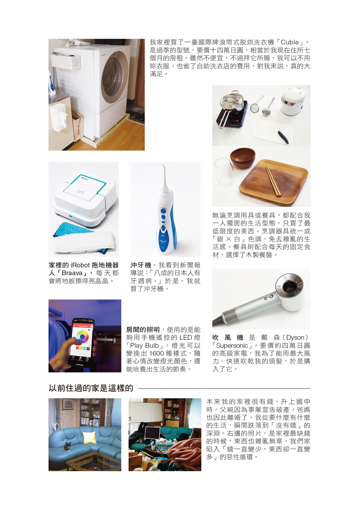
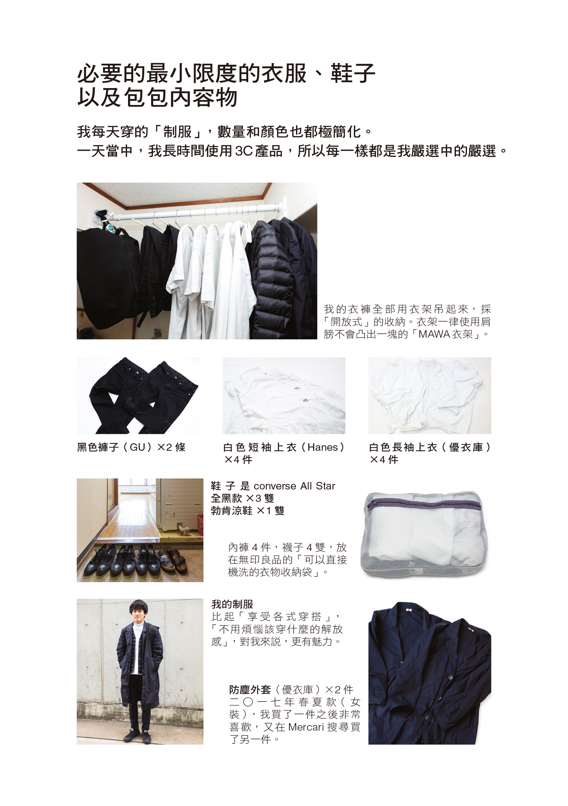
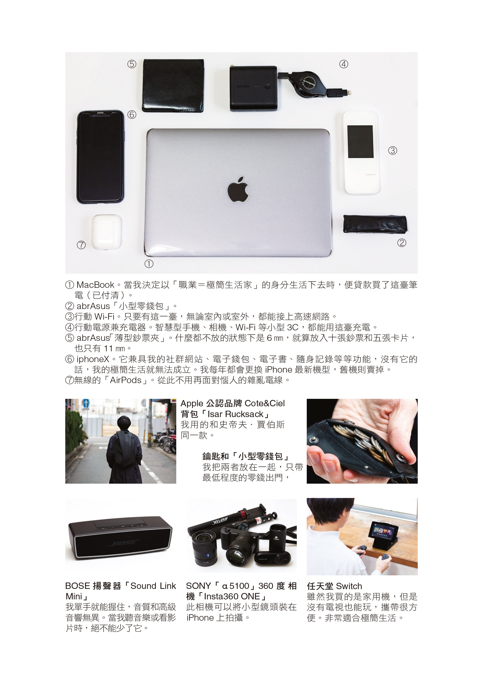
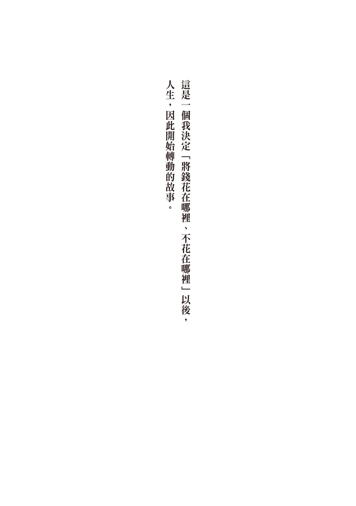
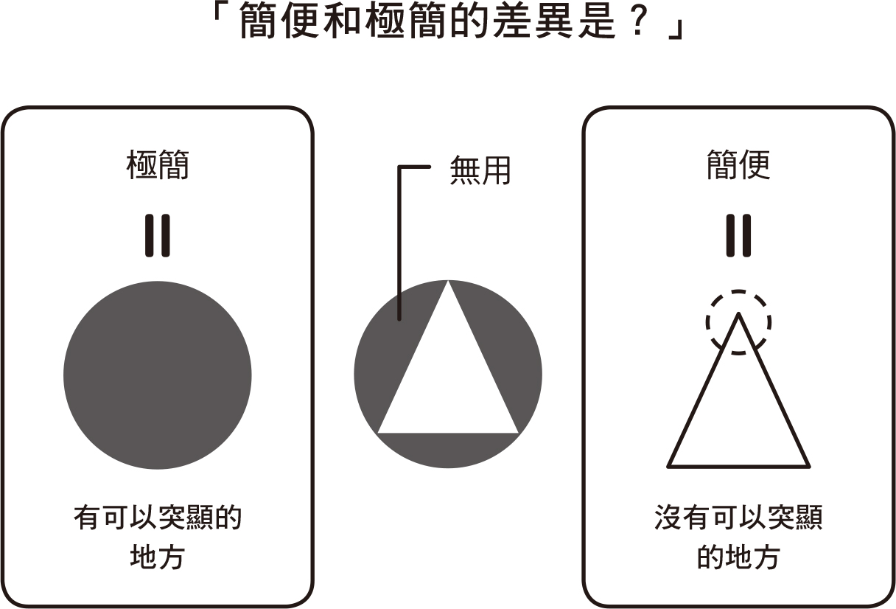
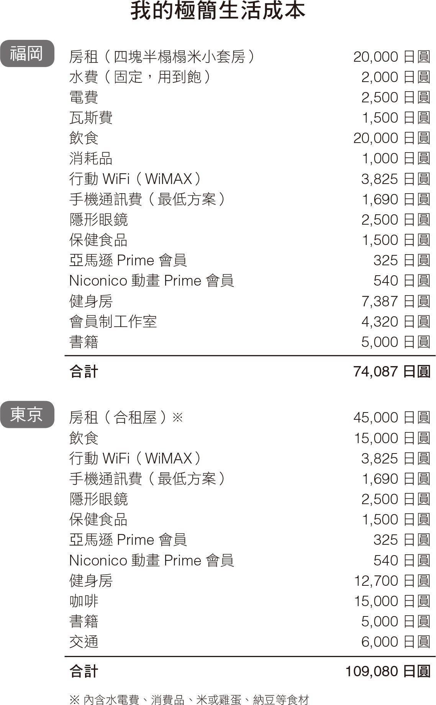

【前言】花费和物质压到最小程度之后，有些重要的事情才得以看见
【作者序】我简单丰富的生活起点：“金钱·极简”
01 四块半榻榻米大小的家
02 直接睡地板
03 没有冰箱
04 没有电视
05 每月生活费七万日元
06 电信费控制在五千日元
07 选择固定支出而非变动支出
08 没有收纳箱
09 搬到小房子住
10 没有钱包
11 每天穿一样的衣服
12 不买”限量商品”，而是”经典商品”
13 善用”租借”和”共用”
14 选择大屏幕的智能手机
15 增加”脱手渠道”
16 与其消费，不如投资
17 光是”喜欢”还不够，要选”喜欢到不行”的物品
18 有时间烦恼的话，还不如快点买、快点丢
19 从消费者变为生产者
20 过”一日一餐”的生活
21 使用固定食材
22 将钱花在预防
23 控制食欲
24 避开会上瘾的食物
25 通过口舌品尝”最棒的奢侈”
26 “健康”才是最大的资产
27 将时间花在”能为自己带来幸福”的事物
28 只在便利店取件
29 投资有助于省时的工具
30 “物品的消费”＝“时间的消费”
31 为了真正要紧的百分之一，去除其余的百分之九十九
32 消除”金钱、时间、空间、管理、执着”的杂念
33 坚守”将钱花在刀口上”与”宽慰原则”
34 至多三选一
35 不知足者无法富有
36 努力做到无须努力
37 不提高生活水准，降低满足的标准
38 打破”固定框架”
39 大范围浏览”可信来源”的信息
40 储存别人的信赖
41 化自卑为积极
42 不将才能浪费在无用的地方
43 将”经验”当成资产，而非物品
44 存款不高于六十万日元
45 不当”恩惠的奴隶”
46 弄清楚”讨厌什么”
47 不要害怕伤害别人，或是被别人伤害
48 不馈赠会消耗对方能量的物品
49 只和能带来利益的人往来
50 减少物品，增加”心灵寄托”
【后记】 开启属于”你的简单丰富生活提案”
【参考文献·网站】






我，什么也没有。
四块半榻榻米大小的住处里，几乎没有任何家电或家具。每个月房租是两万日元。每月的生活费是七万日元。
我没有钱包。
每天穿一样的衣服鞋子。
每天只吃一餐。
读到这里，或许你会觉得，“你过这种生活，一定每天都在忍耐吧。”
事实上，并非如此。目前，是我人生中最心满意足的时期。
管理着我的生活的，是名为”简单丰富主义”的思考方式。
自从我和”更加自律、让自己变得更为精简”这样的思考相遇之后，我的人生有了极大的转变。我终于能从箝制我的”金钱至上”这个观念中，解脱开来，并且得到了真正的自由。
稍微介绍一下我的背景。
我出生在富裕的家庭，就是周遭的人都会说，我是”有钱人家的少爷”。父亲是股票当冲交易员，母亲是家庭主妇，家中的小孩，除了我，还有一个妹妹。
值得感谢的是，我双亲的教养方式是采放任主义。就算我”这个也想要”、“那个也想要”，他们也会一一满足我的要求，现在回想起来，这样的家庭教育还真是宽松啊。想当然耳，我家也堆满了物品。换言之，我是在极繁的环境中长大的，而非极简。
升上初中的时候，父亲宣告破产了，双亲也为此离婚。我从”想要什么、有什么”的富裕生活，一口气坠入了”没有钱”的深渊。
我和单亲妈妈一起生活的日子，只能用”贫苦”两个字来形容。我既无法适应从富有到贫穷的落差，再加上我又进入青春期，整个物欲大勃发，总是在诅咒自己的境遇”多么不幸啊”。
“有钱的人生才有幸福可言，所以我必须考上好学校，进入好公司。”
这样的信念不断地在我心中熊熊燃烧着，驱使我去就读升学的高中。
后来，我在大学联考中不幸落榜，于是我成了一名重考生，每天过着无可救药的生活，日子不是忙于追逐偶像，就是从早到晚都在打工。
尽管如此，我的自尊心却愈来愈高涨。我固执地想着，“除了考上（可以向大家吹嘘的）日本�的庆应大学以外，其他学校我都不屑念。”现在回想起来，我也真够爱慕虚荣的。
重考两次都落榜之后，我放弃读大学，人生也进入了颓废模式。
然后，时间来到二〇一四年冬天。
十九岁的我是一个打工族，梦想着有朝一日能够离家独立。然而，经济条件却不允许我这么做。
某天，我在Google搜索”冰箱 无”这个关键字时，就此人生，出现了一百八十度的转变。
我看到某人的博客，发现他的生活里，别说没有冰箱了，就连微波炉、洗衣机、电视等等，一般人不可或缺的家电或家具，他家通通都没有。我完全没想到，他的东西这么少，但是他的生活看起来竟是如此地幸福。
在我深感震撼的同时，我也被这样的生活方式强烈吸引着。
于是，我和极简生活相遇了，并且让过去一味认为，“总之尽量赚钱，物质愈丰富、人生也愈幸福”的我，惊觉到”物质，并无法让人幸福”。当下的我，便开始着手一一处理自己的东西。
现在的我，生活中只有最小限度的物品，但是却从此免除了经济上的不安及压力的侵扰。我只要花一点点的钱就能过生活，也不用再为了赚钱而牺牲掉什么。
因为我的生活费不高，我反而更能看清，对自己来说，什么才是重要的，人生的�的齿轮，也因此戏剧化地运转起来。
物品数量更少，生活品质更好。
将花费和物质压到最低程度之后，有些重要的事情才得以看见。
多数人对极简生活家的印象，都是”东西极少”。我认为这个想法一半对，一半错。
极简生活家一词，源自”Minimal”，意指”最低程度的”。继续回溯的话，极简主义（Minimalism）其实是从”Minimal Art”这个艺术派系，延续出来的概念。
举个更容易理解的例子，你看看Apple的产品就知道了。为了突显那个众所皆知的苹果符号，所以要尽可能删减没必要的设计。
换句话说，极简主义的本质，就在于”强调某一点”而删减其他，也就是”突显”重点。
我会成为极简生活家，最初的目的是，“想要一个人生活”。
没有钱又想展开新生活，我应该要怎么做才好呢？我决定在开源之前，先删除不必要的花费。
于是，我筛选出”无用之物”，将之一一剔除，在这个过程中，我逐渐了解到，对自己而言，什么才是最重要的，也掌握到了值得”突显”的重点。现在的我，在最小限度物品的包围中，过着将生活费压到必要、且最低限度的生活。

“这个非买不可，那个也非吃不可，我必须赚更多的钱才行……”
你想实现的愿望，真的是这些吗？
“想让别人羡慕我！”
“我不想丢脸。”
难道不是因为”虚荣”，你才这么想的吗？
据说，在我出生以前，日本经历过泡沫经济时代，当时每个人都是花钱如流水。对那时代依依不舍的日本大叔们，是这么说的：“眼睛向上看，吃好料，开好车，睡好女人吧。”
然而，对于出生在没有空白可以填满的时代、从小就过着物质爆炸生活的我来说，这种说法根本无法被打动。
与其消费”别人认定的好东西”，还不如被”自己认定的好东西”所包围，这样要来得舒适自在多了。一旦决定”钱要花在哪里、不花在哪里”，也等于弄清楚，“对自己来说，什么才是幸福的。”
还有，我们应该删减的”无用”，不只是金钱花费或者物品的数量，还应该全面拓展至人生，包括：生活形态，甚至是人际关系。
钱·极简（花费）
物·极简（物质）
时·极简（时间）
人·极简（人际关系）
事·极简（思考、行动）
以我来说，我是从”金钱”和”物品”开始实践极简主义，之后才陆续延伸到”时间、人、物”。
极简生活的开端，可以是任何的原因。不单单只是物品，而是能将极简主义应用到人生所有的面向，才称得上是极简生活家。
现在的我，职业就是”极简生活家”。
我是”Minimalist”的代表，工作的事业主体是透过博客以及社交网站，“宣扬极简生活的价值观”。
就像我在成为极简生活家之后，终于找回了原本的自己。我希望能有更多人，可以通过我的分享，了解到极简生活的美好之处。


目前我在老家福冈县租房子住，住处只有四块半榻榻米大小。房租是两万日元。
曾有人问我：“房租那么便宜，是不是房子有什么问题啊？”
这些担心是多余的，实际上，我过得相当舒适。
如果您有机会造访我的住处，或许会惊讶于我家的内部”空空如也”。是的，我住在小空间，生活也能过得这么舒适，全都是拜”空空如也”所赐。
一般的家电或家具，我家几乎都没有。我家既没有冰箱，也没有电视，也没有桌子、床铺、收纳箱。
还有，我之所以选择住这里的关键，就在于家里有一面外凸窗。我用餐的时候，可以在那里摆放餐具；读书或上网的时候也可以坐在那里。当我看到房间照片的那一瞬间，很自然便能想象自己生活于其中的模样。虽然说，房租只有两万日元，不过，却不是那种会出现昭和连续剧里的破烂公寓，而是以钢筋水泥建造，感觉开阔的边间房。
不过，房租便宜，还有其他几个关键原因。
首先，是屋龄。我住的这栋房子差不多盖了三十年。换算起来，是在日本泡沫经济时期建造的房子。据说，那时期预算充足，施工都很精良。因此，就算房子再老，只要结构坚固就没有问题。
此外，没有电梯的公寓比较不受租房族的欢迎，房租就有议价讨论的空间。房子高度超过三十一米的建筑，依规定必须设置电梯，所以五楼以下的屋子就成了我的目标。何况靠双脚每天上下楼梯，还可以改善我运动不足的问题。
多数人都一厢情愿认为”房子越大越好”，那不过只是人们的幻想罢了。接下来，将会进入”小而美”的时代。而我的”小日子”，丝毫没有需要忍耐的地方。四块半榻榻米大小的房间，还留有大量的空间。屋子里只放我最爱的少数精选物品，我只做自己喜欢的事，这是多么奢侈的生活啊。
现在，美国非常流行将必要物品减到最少，过着一种名为”迷你屋”(Tiny House)的生活方式。就连美国这种消费大国都是如此。而日本也以”无印良品的小屋”为先锋，出现了小日子潮流运动。
小房子因为租金低，所以住户可以选择喜欢居住的地点。房子打扫起来也很简单。更重要的是，省下来的金钱和时间，让生活变得更加宽裕了。
“买小房或小车，将省下来的钱花在虚荣以外的地方，才能得到幸福。”
这是《幸福与金钱的经济学》（Falling Behind: How Rising Inequality Harms the Middle Class）由罗伯·法兰克（Robert H. Frank）所著，一书所导出的结论。根据该书指出，虚荣是被内建在DNA中的本能。因为虚荣心作祟而购入豪宅、名车，那种将金钱与地位连结在一起的人，本身的幸福感非常地低。
这点我在极简生活中相当有体会，这一点就经济学观点来说，也是正确的。
一身轻，不等于一无所有。
在接下来的时代，极简毋宁是最强的生存战略。
房子越小，
生活和心灵才更能出现”余裕”。
我都直接睡在地板上。人称的”打地铺”。
不过，我没有铺垫子、底被，而是直接睡在地上。夏天，我会盖毛巾毯；天冷的时候，我就卷着棉被睡觉。
我在推特贴文这件事之后，获得相当大的回响。
多数人的回应都是：“无法想象”、“做得太过火了吧”。
老实说，一开始我也觉得：“直接睡地板，是不是有点勉强呀？”
当时，我刚好要搬家，于是便下定决心实践睡地板这件事。然而，睡着睡着居然也没有出现任何的不适感，于是我也就这么持续了下去。结果，就是习惯变成了自然。
只要你舍弃了”没有床铺就无法入睡”的固有观念，剩下的就容易多了。现在的我，已经养成了只要有地板，到哪里都能睡着的体质。说到底，人只要躺下闭起眼睛，就能够睡着。
推特上有另一派声音是：“我也（曾经）这么做！”赞成的人还不少呢。
尤其是从事运动或看护工作的人，腰痛去看病的时候，医生几乎都会建议”睡硬一点的床吧”。事实上，市面上甚至有在贩售医疗级”拼接地板”，让人们可以铺在地上睡觉。
说起来，我之所以会想要直接睡地板，是因为我发现有研究显示：“高级床垫和一般水泥地，带来睡眠品质是一样的。”
睡眠学权威威廉·德蒙特（William C. Dement）博士，接到某寝具公司的委托，希望他能调查”某新型寝具改善睡眠品质的成效”。为了让实验结果更容易理解，博士准备了三种情境：“在新型床垫上睡觉”、“在旧床垫上睡觉”、“在什么也没铺的水泥地上睡觉”。
然而，结果相当惊人，“无论哪种情境，受测者的睡眠时间与品质都一样”。
多数人在思考如何提升睡眠品质的时候，首先都习惯依赖物品。例如，兴起”备齐高级寝具”的念头，不过应该还有其他方式才对，像是上午晒晒朝阳、睡前不刷手机、规律的三餐与运动……等等。
既然寝具无法左右睡眠品质，那么要睡床或地板，就是个人的喜欢和偏好了。如果那样的话，我想要一切从简。
睡在硬的地板上，不但翻身更容易，而且也不会赖床，也没有床垫会滋生细菌或尘螨的问题。更重要的是，连叠棉被或者晒棉被的功夫也省了。
万一，我交了女朋友，或许会为了夜晚的幸福而添购寝具吧。
届时，还望明察。
比起睡床铺，
睡木板更不容易赖床。
我的极简人生是从上网搜索关键字：“冰箱 无。”开始的。
实际上，一直到不久前，我家都还有一台单人用的小冰箱，不过现在已经送人了。自从那时以后，我持续过了两年多没有冰箱的生活。迄今，倒是没有出现过什么大问题。不仅如此，甚至还获益良多。
在此，我试着列出我家没有冰箱之后，所出现的变化。
① 因为无法保存食物，所以我只吃新鲜的食物
我养成了每天晚饭前去附近超市采购的习惯。例如，我很喜欢吃新鲜的鱼，几乎每天都会吃，但是新鲜的鱼不易保存。因此，只要我脑中浮现”想吃鱼！“的念头，我不是立刻出门买，就是趁外出回家前路过超市去采购。
鱼在新鲜的时候食用，真的很美味呢。
② 因为嫌准备吃的很麻烦，于是我过着”一日一餐”的生活
“想减肥，就丢掉冰箱吧。”
好吧，这句话是我临时编出来的名言金句。
家里没有冰箱的话，就不会出现”趁便宜一次购足”的念头，家里也不会堆积满出来的食品，也不会屈服于”要不要多吃一点呢”的诱惑，可以防止吃过多。
一天要采买三次太麻烦了，自然而然我就演变成一日一餐。用餐的次数减少了，花的钱当然也会减少。还有，“一日一餐”的饮食生活，让我的身体变得超健康。这部分，我想留到后头再详细分享。
③ 吃常温即可保存的食材
像是罐头、干货等等，我使用常温即可保存的食材或调味料的机会变多了。像是鱼罐头或水果罐头、牛油果、豆浆、蔬菜汁、海苔、芝麻、玄米等等。
我原本就很重视养生，也不太排斥饮用常温饮料，不过”无法冷藏”的环境又强化了这样的倾向。开水就不用说了，豆浆或蔬菜汁我也都是喝常温的。只要一喝冷饮，肚子就会着凉，体温也会跟着下降。常温饮料相对来说，健康多了。
经过这些变化，我更确信”就算没有冰箱，人类也可以过得很好”。因为没有冰箱，反而养成了我只吃新�的食物的习惯。此外，还达到节约、不暴饮暴食等等，许多意想不到的好处。没有冰箱的生活，更贴近人类原本不多不少的生活型态。
还在犹豫不知道自己是否需要冰箱的人，不妨试着清空冰箱，拔掉插头，过一段期间限定”无冰箱生活”看看。我想你应该会发现，没有冰箱，也不会怎么样嘛。
没有冰箱，才能分辨，什么是”真正想吃的时候”。
我老家从浴室到卧室，一共有六台电视。从我懂事以来，我就是一个一有时间，就立刻打开电视的电视儿童。然而，目前过着极简生活的我，住处没有电视。
光是没有电视，房间就变得宽敞许多。为了购买电视所花费的时间、随之而来支付的数万、数十万花费，全都可以节省下来了。还有，自我可以掌控的时间也增加了。遥控器有个神奇的魔法，就是明明没有想看的节目，回过神来，却已经躺在电视机前消磨了好几个小时……这样的情况是不是很常见呢。
因为没电视可看而多出来的时间，便可以投入像是阅读这样的”自发性”活动。如此一来，你越会觉得，将时间花在看电视这种”被动性”的娱乐上面，是一种浪费。仔细想想，每天碎念着”虽然我想尝试新事物，可惜没时间”的人，最爱花时间看无聊的节目，或是去参加那些其实根本没那么想去的聚会。这些活动都是没有意识到自己的生活形态欠缺主动，只知道被动接受的最好证明。
现今网络如此兴盛，光是上网便能获得一定程度的资讯，有趣的网络影片也变多了。下载专用的APP或者利用电视台的官方资料库，也能在网络上收看电视节目。话说回来，电视节目也有许多有趣的内容，完全都不看的话，生活也未免太无聊了。但是，主要问题还是在于，“坐在电视机面前，漠然地看着电视”，这种被动性的收视习惯。
现在这个时代，就算没有电视也能收看节目。使用有上网功能的录影机，便能通过智能手机或电脑观赏电视节目。此外，还可以录下感兴趣的节目。就连广告也可以跳过，不好笑的部分直接快转。如此一来，就能更有效率地只看自己想看的部分。结果，一味嫌弃电视、认为”电视是时间小偷”的人，或许只是不知道如何正确地观看电视吧。现在，我会地毯式搜索我想看的节目，但是花在看电视的时间，一周最多也不过就三、四个小时。尽管如此，和小时候一整天都在看电视的我相比，满意的程度却是惊人的高呢。
享受电视的秘诀，就在于没有电视。
“你每个月只要有多少钱就能过日子呢？” 能够立刻回答这个问题的人，远比我想象中来得少。我可以秒答，是七万日元。
请彻底掌握自己每个月的最低必要花费吧。如此一来，你便能大致估算出一个数值：“我赚到这些钱就能活。”之后，你才能从”没来由的经济恐慌”中解脱。这是日本作家四角大辅先生在他的著作《为了自由，二十岁就该舍弃的五十件事》中，所提倡的”极简生活成本”(Minimum Living Cost)概念。我自己开始一个人住的时候，也曾惊觉：“什么嘛，原来只要这点钱就足够生活了。”因而大大地松了一口气。当然，生活方式改变的话，极简生活的成本也会跟着改变。我曾在东京的合租屋生活过好几个月，当时我的极简生活成本是十一万日元。十一万日元在日本是即使做低门槛的工作，也能赚到的金额。再不济的话，在便利店打工一百一十个小时，一样可以赚取这个金额，足够负担生活。

我离家之后开始独立，当时我的收入大约是每个月九万日元。能在那种经济绝境之中，还下定决心搬出去一个人住，正是因为我”将每个月的必要开销压到最低”，才能做到。多亏了我乐观地想：“每个月我只要赚七万日元就不会饿死，生活不会有问题。”才能豁出去挑战生活。我在之后的篇章里也会详细说明，因为智能手机和网络的普及，许多服务或娱乐都很便宜，甚至免费。所以只要妥善运用，即便花少少的钱，日子也能过得丰富滋润。这不是节俭，而是聪明省钱。你需要的不是忍耐，而是消息灵通和多花点功夫。
倘若你心中没有”拥有这些我就能满足”的指标，就算你再怎么成功，赚到再多的钱，你的欲望还是永无止境，填也填不满。所以，请算出自己”多少钱，就能过上心满意足的生活”吧。
光是知道”多少钱就能过日子”，就能摆脱”没来由的经济恐慌”。
我的智能手机选用便宜的SIM卡，每个月的电信费只要一千六百九十日元。之前，我和电信公司有绑约的时候，电信费每个月要八千至一万日元左右，两者相较起来压倒性的便宜。我的极简生活之所以能压低在七万日元内，可以说是拜低费率所赐，也不为过。
在这之前，在日本办号码主要是和dokomo、au、softbank，这三大电信公司签约。然而，近年来提供低费率的通讯业者正逐渐增加当中。借用了电信公司的线路，免除无用的服务以及人事支出之后，收费才能如此便宜。我现在选用的是”Line Mobile”，每个月的用量是3GB。或许，你会担心：“3GB够用吗？”不只我够用，有资料显示，有六成的智能手机用户，每个月3GB的用量就很足够了。根据用量的不同，费率也会跟着改变。若是低费率方案，10GB的月费也只要三千日元。如果几乎不上网，选择1GB方案的话，月费甚至只需要一千日元。况且电信公司又经常要绑约两年。所以在既没有值得绑约的优惠，月费又固定不变的情况下，我的手机是iPhone，搭配低费率的方式，生活照样过得如鱼得水。
只不过，低费率还是有缺点。首先，无法使用内含电信公司名称的邮件信箱，不过，切换到Gmail等等其他电邮地址，就可以解决了。其他的缺点还有，无法用Line的ID搜索（“Line Mobile”除外）、白天或晚上等尖峰时段，上网速度会变慢、故障时缺少后续支援……等等，尽管还是有不足之处，不过我觉得仍旧是优点占了上风。就这样，我每个月能省下（起码）六千日元，等于一年省下了七万两千日元。万一我要和电信公司解约的话，必须支付违约金以及手续费，然而几个月之后，我即可回本。
此外，我并没有在住处牵线装机，而是使用外出和在家皆可上网的移动WiFi（WiMAX）。线路固定的话，每个月的电信费大概是四千日元，加上初期费用和安装费，三万日元跑不掉。就这点来说，倘若使用移动WiFi上网，还能压低每个月的网络支出。虽然装机网速比较快，但是对多数人而言，移动WiFi的速度就很够用了。此外，我外出时使用移动WiFi上网，也可以分担手机的上网用量。我只有3GB就用得心满意足，很大的原因也是和移动WiFi并用的关系。如此一来，我每个月的电信费就能压在五千日元以下。让我上网用手机一点压力也没有。当然啦，省下来的钱还能用在自己其他喜欢的地方。
请试着克服， “好像很麻烦”吧。
“无法预估”的变动支出会带给人们不幸，“确实预估”固定支出，则会为人们带来幸福。如同我在前一篇所叙述，只要掌握自己每个月的最低必要花费，就能摆脱”钱好像会不够用”的不安。换言之，生活中的”固定支出”越多，日子会过得越轻松。
例如，变动支出高的人：
▽ 外出用餐时，每次有想吃的东西，都是用单点的。
▽ 外出购物时，必须支付地铁费用或油费。
▽ 有想看的DVD，每次都是用租的。
另一方面，变动支出低的人：
▽ 外出用餐时，会选择”套餐”、“自助餐”等”金额固定”的餐点。
▽ 月付325日元加入亚马逊Prime会员，“省去到店选购的交通费”，即可购物。
▽ 月付680日元加入Netflix，价格不但比附近的出租店便宜，选择也更多。
实际上，没有比现在这个时代更适合增加固定支出了。因为划算又便宜的”定额服务”(Subscription)，正在陆续问世中。例如，我在前文中列举的亚马逊Prime、Netflix，只要加入会员，就不用每次都花钱租DVD。其他还有Apple Music、AWA、手机的USEN等等。音乐听到饱的服务也很多。
不只是娱乐。
饭店住宿、出租车、飞机等等，所有类别的服务都在定额化。还有月付19800日元，就能开车开到饱的租车服务。若是自己买车的话，除了购车费用，还得支付税金、车检、维修等开销，而定额服务则全部包括在内，解约也很简单。
此外，餐饮业也推出了定额服务。
2018年4月5日，“Reduce GO”在日本问世了，每个月只要支付一定的金额，就能享用餐饮店没卖掉的报废食品。月付1980日元便可到附近的餐饮店吃剩余食品，每天最多两次。说得极端一点，你若运用得当的话，或许还能将每个月的餐费固定在1980日元呢。
今后，这样的服务想必会越来越多吧。极简生活家必须消息灵通，有获得这些资讯的能力，以及积极尝试的柔软身段。将支出的变动范围控制在最小，自然不会觉得不安，生活也更容易。能够调整自己的消费习惯，才是真正的强者。
将所有费用定额化，管理家计更轻松。
我的家里不用任何的收纳用具。独居者家中常会见到的，像是：衣物收纳箱、三层柜、架子等等，我规定自己通通不准用。
人的天性是这样的，一旦收纳整齐之后，空出了空间，就会想要把多出来的空间填满。不过，如果没有收纳用具，就会将物品数量控制在原本的容纳范围内。
因此，我的想法是，尽量使用房间里原本就有的收纳空间。
我的厨房没有专门用来放置调味料或者器具的收纳盒，清洁剂或者锅具也是直接就这样摆着。因为东西原本就很少，只要善用流理台或者瓦斯炉周围的空间，便已足够。
衣物也控制在一定的数量，无论上半身或下半身，我一律用伸缩棒加衣架，以吊挂的方式取代衣橱（在此，我推荐不会让肩膀突出一块的”MAWA衣架”，不仅外型美观，衣服吊起来又整齐）。
我每天要使用的扫地机器人，也是直接裸放在地上。
“能够看见所有物品”是我的极简生活特色之一。我告诉自己，只能留下无须遮遮掩掩、就这样摆放出来也没关系的物品。
东西看不见，就会在暗处增生。对多数人而言，“收纳，就等于想要隐藏”。会想要把东西藏起来，就代表东西本身有某种问题。你的房间里是否也有设计不够精美、使用率很低、只因为妥协而买下来，最后被你收起来的物品呢？虽然说眼不见为净，实际上则是浪费了空间，也就是所谓的”藏而不用”。
当我们去逛居家用品中心或家具店，便利的收纳用具更是多到令人眼花缭乱。午间的资讯节目，也经常介绍一些，诸如：“利用百元商品打造时尚收纳空间”之类的生活妙招。不过，可悲的是，越是使用这些商品或妙招，东西也会越囤越多。
房间很乱不是因为没有好好收纳，而是无用的东西太多了。
前几天，我发现了一段很有趣的影片。影片的企划内容是：看房间的前后对照图，如果没有发现物品被偷走了，就没收那个物品。挑战者居然连价值20万日元的高级相机不见了，都没发现。
居然连自己的东西被偷了，还丝毫没有察觉。某种意思上来说，就是一种异常的现象，很明显是挑战者家里的”东西多到爆炸”。相机被没收之后，挑战者本人也自我反省：“我只是把相机当作摆设，其实我很少在用。”
尽管如此，我也不是一个收纳用具也没有的人。我随身携带的笔电，会放在”背包”里，个人药品会放在”手拿包”，刮胡刀、牙刷等等会弄湿到别的东西的物品，则放在”旅行化妆包”。这些收纳用具的共通点是，“除了收纳之外，还兼具其他的用处。”无一不是具备了”收纳”和”可以带着走”，这两种功能。
根据家庭情况或生活型态，或许生活里必要存在着”为了收纳而收纳”吧。但重点是，“在你着手整理前，请先思考你是否能免用收纳用具”。
若能免去”为了收纳而收纳”，便能养成不增加物品的体质。
你若想要减少物品的话，有一个办法保证成功。
那就是：“搬到比现在更小的房子。”一旦搬进小房子，自然就得减少物品。
你是否也有在搬家的时候，果断丢掉一堆东西的经验呢？
能够改变人的，并非意志，而是环境。与其努力”丢东西”，还不如先将力气用在改变”环境”上头。如此一来，我们为了配合环境，自身也会主动做出改变。
“搬家公司居然开价150万日元。”
在搬家的相关新闻当中，经常会出现这样的标题报道。
据说，每逢搬家旺季，搬家公司也会跟着漫天喊价，不少人都因此到国民生活中心（类似台湾的消基会）申诉求助。
金额高达150万日元的搬家费用，固然惊人，不过我们由此推断，搬家的东西一定很多，所以必须住进租金高昂的大房子，刚入住的保证金想必也不低。不仅如此，还得为大量物品分门别类、装箱，之后还得搬运，耗费大量的时间和精力。
所以说，搬家是减少物品最好的机会。
以我个人为例子。我搬家的东西，大型家电除了一台烘脱洗衣机之外，其余的物品，我用一个行李箱加一个背包，就打包完毕了。
实际上，以前我从老家独居的地方搬到东京的合租屋时，只拖了一个皮箱就搞定了所有的家当。而有的人，光只是减少随身的物品，就能连搬家公司都省了。
纵使不至于”一个皮箱”就搞定一切，一台小货车或一辆轿车，再搭配几箱货运，就现实面来说，这个搬家方案完全行得通。
为了根本没有在用的东西而住大房子，等于一直都在多付房租。
“东西变多了，租个仓库来放吧。”就是最典型的例子。
光光只是”持有”物品，你就必须付出成本。就连暂时寄放随身物品的投币置物柜，你也是必须付出金钱和心力管理。相反的，把不用的东西处理掉，即便是小空间也很够用，甚至还能住在房租较便宜的地方。
更重要的是，少少的物品，住在小小的房子，人生会更轻盈。
举个例子，我现在的房租是2万日元，刚入住的保证金是6万日元，退租费用是2万日元。换言之，如果我想要搬家，手边有8万日元的话，就能想搬就搬。
8万日元就可以改变居住的环境，还有比这个更便宜的吗？
利用”搬家”带来的必然性，强制戒除囤物癖。

我不用现金。因为我本身极度偏向”非现金派”。
最近我更是只用iPhone，几乎就足以应付所有的支出。使用iPhone 7以后，搭载的”Apple Pay”，就能支付”QUICPay”、“Suica”卡。到附近的超市购物、搭电车等等，几乎所有日常生活花费，只要iPhone在手，几乎都能搞定。
网购等无法用电子钱包支付时，则以信用卡代替。此外，日本乐天信用卡附属的电子钱包”乐天Edy”，几乎可对应所有的支付系统。
尽管如此，餐饮店或者观光地区，也会有无论如何都必须用现金支付的时候。
我的对应之道是，带一个能放零钱的钥匙包或者�的票夹。我现在使用abrAsus皮夹，很多极简生活家(Minimalist)也爱用。它的特色是，皮夹本身非常薄，就算放进裤子口袋，也几乎感受不到钱包的存在。平时，我都把钱包放在家里，只有必要的时候，才会随身携带。
因此，我并没有许多人想象中的钱包。
还有，无现金生活还有其他的好处。
假设信用卡的返现是百分之一，一年刷两百万日元的话，就能退回两万日元。最近能用信用卡支付的水电燃气费也增加了。
因为不需要数钞票或零钱，除了省时之外，还能免去困在收银台前排长队的烦恼。只要在超市或便利店试过一次，想必你会为结账速度之快而大吃一惊吧。
现金支付难以留下记录，记账时难免会有模糊不清的部分。如果使用电子钱包，便能做到自动记账。
更重要的是，现金有「全部丢失」的风险。实际上，我曾在京都旅游时丢失了钱包，一共损失了两万日元现金以及各种卡片。这种时候，倘若是信用卡或电子钱包，就能立即停用支付功能。
然而，花费数万日元购买的钱包本身，却永远不会回来了。持有「有形物品」的风险，不可计数。
最后，我想分享以下这段报道。
根据 JCB 的调查，「无现金派比现金派的存款多了二点七倍」。比较去年一年的平均储蓄金额，无现金派是八十七万五日元，现金派是三十二万五日元，两者的差距是二点七倍。
说得极端一点，任何人都能使用现金，使用时也无须思考，但是若要将无现金支付运用得当，相对的则需要花功夫研究。
我认为这是日常生活中是否具备了「精益求精」的意识，所造成的差异。
光是在生活中排除现金，就能将风险降到最低。
我每天都穿一样的衣服，甚至已经可以说，这是我的「制服」了。
我有四件一样的针织上衣，两条一样的紧身牛仔裤，两件一样的大衣，T恤、袜子、内衣裤等，也各备齐了四件。
不单单只是衣服，鞋子也一样。在我家的玄关里，备有三双一模一样的 Converse 运动鞋。
原本我是一个热爱时尚的人，初高中的时候，即使零用钱或者打工收入少得可怜，大部分的钱我还是拿来买衣服或时尚杂志。
然而，就算买了流行潮衣或者最新设计款，最后还是只穿自己喜欢的衣服。既然如此，每天持续穿「最喜欢的衣服」，不是更为舒适和时尚吗？
而这样的想法，开启了我的「便服制服化」的生活。
「一直穿一样的衣服，会不会很快就腻啦？」尽管一开始我也会不安，然而比起「享受多变穿搭所带来的乐趣」，我觉得还是「不用烦恼该穿什么的解放感」，占了压倒性的胜利。
据说，人每天要做出九千个选择。
「吃什么」、「穿什么」等等，生活中有许多事物都需要抉择，就算单次的选择不算什么，然而累积下来就会造成莫大的压力。而每天都穿一样的衣服，便能减轻陷入「选择疲劳」(Decision Fatigue) 的风险。苹果公司的联合创始人之一史蒂夫·乔布斯、社交网站 Facebook 的创始人扎克伯格，为了集中精神工作，每天都做同样的打扮，便是最知名的例子。
大家可能会质疑：「老是穿一样的衣服，会不会无法打造自己的个性呢？」答案恰恰相反，反而还有可能被认为是风格十足的时尚人士。
值得感谢的是，最近我走在路上被认出来的机会变多了。每次我一定会听到的话，便是：「你的穿着打扮和博客形象一模一样。」
衣服，更尤其如此，严选再严选的单品，最后极有可能变成个人招牌。
「制服」的选择方式，也有几个重点。
首先是素色，而且式样简单。若是有图案的单品，搭配的选择性会很有限，很快就会觉得腻了。
我的穿搭公式是：「黑×白。」我将衣服限制在两种颜色。因为重复穿的关系，免不了要一直清洗，所以要选择坚固不易皱的，材质也变得格外重要。
购买流行单品，按照当天的心情或场合搭配衣服，的确有其乐趣。
尽管如此，我还是宁愿每天穿一样的衣服。因为可以，不用花脑筋去思考该怎么搭配，省下来的精力和时间，便能运用在其他地方。
将时尚赶出脑中，才能专注在自己想做的事情，或是对未来有益的活动。
个性或自我，不是靠服装而是靠人来表现。
以前的我，一心只想着「绝对不和别人一样」，净是买一些「限量商品」。衣服也是这样。心想：「既然都要买了，就要选择季节限定款或限量款。」
然而到了现在，我的购物习惯却是：「T恤固定买○○牌」、「运动鞋固定买△△牌」，我变成只会对「经典商品」下手。
举个例子，最近我换了两条新的黑色紧身牛仔裤。
我很早就决定「购买黑色紧身牛仔裤的时候，只买GU那一款的28吋」，所以不用烦恼该去哪家店选购，走进店内将商品拿到手，就可以直接前往收银台结账。再加上，我穿起来的感觉和尺寸都一样，所以连试穿也免了。
而且这次买裤子，我还是在京都旅游时，重新换购新品的。因为我的裤子重复洗涤到有点褪色了，因此临时起意想换新的，一想到：「可以在京都直接买到一样的东西耶！」我的内心甚至有点感动呢。
我很清楚大家会被「限定」、「○○版」这样的字眼所吸引。但若认为「这是再也无法入手的限量商品，自己一定会好好珍惜」，那可就大错特错了。就算发誓会好好爱惜，只要是有形的物体，终有一天还是会劣化。家中物品也有可能因为地震而全毁。未来是无法预测的。
万一遇到这种情况，如果是限定商品的话，就得「重新挑选适合自己的东西」，不啻为一种负担。更何况是「再也无法入手的商品」，因此使用起来小心翼翼，我认为这也是很大的压力。
就这点来说，倘若换作经典款，只要重买一份就行了，使用起来的舒适度也一样。无论在日本哪个地方，都不用担心买不到。也不用烦恼该去哪里逛，或是在几件候补的商品中挑选。
顺带一提，以下是我固定使用的东西品牌：
【T恤】Hanes
【紧身牛仔裤】GU
【运动鞋】Converse
【凉鞋】勃肯
【钱包】abrAsus
【智能手机、电脑】Apple
以上的商品，全部都是十分容易购买到的经典商品。
大家应该都听过，或是曾经使用过。而经典之所以为经典，好用是必然的，而简单的设计也很讨人喜欢，所以我相当爱用。
尽管这些商品的外型并不突出抢眼，然而个性这件事从来都不是靠身外之物来彰显。被称做「经典」的商品，有被众多的人们持续爱用的价值。使用它们并不代表放弃「做自己」。经典，是前人的历史积累，请心怀感激地享用它的种种好处吧。
「耐看」比「稀有」，更值得购入。
最近，附设咖啡座的书店变多了。就算没有在书店内买书，只要点一杯咖啡，就能将喜欢的书带到桌边，享受一边喝咖啡一边阅读的时光。
前几天，有件事让我留下了深刻印象。
有两个大学女生，拿着数本旅游指南，兴高采烈地似乎正在讨论旅行计划。
当然，她们并没有买下那些书，最后还是放回书架上。不过，“为了翻阅旅游指南，所以点了咖啡消费”，对店家和顾客来说是双赢的关系，倘若遇到了”想要反复阅读”、命中注定的那一本书，想必读者还是会把书买下来的吧。
这种”借阅”制度，以往是图书馆承担的角色。然而，图书馆的进书册数有其限制，若是遇到受欢迎的图书，可能预约了好几个月还无法借阅。
这一点，换成书店或咖啡店的话，就能轻松读到最新上市的书籍。
我由衷希望这种类型的商店，今后会越来越多。
（当然，若您要在咖啡店阅读本书的话，也很欢迎。）
我认为，现今这个时代，社会潮流已经从”持有”物品，转向了租借或共享等”暂时使用”的服务系统。
租车、汽车共享的稳定发展，也可以说是其中的代表。尽管”年轻人不买车”的趋势，让大人们皱起了眉头，若是住在都会区的话，靠公共交通工具和自行车，几乎就可以抵达所有的地方，所以说买车的性价比真的很低。
每天都穿着一样衣服的我，也有三双一模一样的Converse All Star，为了怕过分磨损，我每天都换着穿。不过，偶尔也会遇到”不适合穿运动鞋的场合”。例如：婚礼、葬礼、有穿着要求的餐厅等等。
这个时候，时尚出租服务就很方便了。
市面上有好几种针对男性、女性的时尚租借服务。诸如”Leeap”以全身穿搭租借为基本，而”DMM Fashion Rental”还可以单独租借某样单品，像是鞋子等等。我也曾经使用过这样的服务，难得享受了一下”不同于平日的自己”。
顺带一提，在”DMM Fashion Rental”，男士商务鞋租借两天的费用是一千九百八十至四千九百八十日元左右。去量贩店购买新鞋的话，差不多也要这样的金额，然而这个价格的品质可想而知。
仅仅为了”只穿那么一次”，就勉强购入”其实并不怎么喜欢”的鞋子，未免太过浪费。这样的鞋子想必终将会被你赶入鞋柜的深处，在不远的将来，面临着”被丢弃”的命运。
既然如此，不如在必要的时候，花钱租双好鞋子还比较聪明。
不仅是服饰或车子，办公室、旅行住宿、自行车、停车场等等，现在很多东西都能共享。正因为现在是”租借”和”共享”的时代，我们才更可以过着”无须持有、也可使用物品”的丰富生活。
与其什么都用买的，不如过着轻便又丰富的生活。
经常有人跟我说：“哎呀，你的手机会不会太大了啊？”
这句话是否在暗示我：“亏你还自诩为极简生活家呢……”以及，“手机不是越小越好吗？”
我会选择大屏幕的智能手机，有一个很明确的原因。因为我会看大量的电子书，也很喜欢做笔记，并且经常使用手机写文章。看屏幕的时间一长，手机画面太小的话，眼睛就很容易感到疲倦。
有一次，我心想着：“画面大一点的话，眼睛应该比较不会累吧。”于是买了平板电脑。然而，智能手机和平板电脑”两机并用”，对我而言，除了倍受压力还是压力，因此很快我便将平板电脑脱手了。
就这样，对我个人使用经验来说，“大屏幕智能手机”才是最佳的解决之道。
顺带一提，雨伞的话我也会挑大尺寸。因为我超级讨厌淋到雨，为了将淋湿机率降到最低，“大伞”就成了我的必需品。
此外，我还买了大伞和折叠伞。仅仅只是”有可能会下雨”的程度就带大伞外出，总觉得有点麻烦，而倾盆大雨时如果只有折叠伞的话，未免太过凄惨。
可能有人会觉得，“亏你还自诩为极简生活家，居然有两把伞……”吧？
但是，对我来说，最优先事项是”不会淋到雨”，而解决的办法便是拥有两把伞，刚好是这样而已，当中并没有任何浪费存在。
倘若是”不介意淋到雨”的人，那么有一把折叠伞就很够用了；如果是”大多开车，雨伞都放在车上”的人，在车内放一把大伞也就行了。
一个人的必需品会随着内心”无法妥协的部分”，或者身处的环境而改变。最重要的是，你要将”必要的最低限度”锁定在自己在乎的地方，以及判断”为什么选它担任必需品”的能力。不是坚持”东西越少越好”，就是正确的。
虽然我的住处空空如也，却也拥有一样颇为自豪的物品。那便是名为”Play Bulb”的智能LED灯。这盏灯可以通过iPhone手机遥控，变换出红、黄、蓝、紫等等各种颜色。
一般来说，照明只要做到”照亮”就算完成任务。不过，我的房间空荡荡的，于是我便想到，“既然什么也没有，那就用照明来妆点吧。”
当我想放松的时候，会选择蓝光、想要集中精神，就选择白光，配合自己当下的状况选择颜色，也能打造出某种生活节奏。
正因为我将房间无用的东西全部去除，才更能突显出这样的照明。而这正是”突显”的精神，也是极简生活所追求的目标。
为了做到极简，或者说，正因为极简，有时也要”选择大的，才能变小”。
“购入”、“持有”、“思考”、“脱手”，这样的过程重复几次之后，渐渐地你就会知道”自己想要突显的重点在哪里”，从而找出最佳的因应之道。
“突显”的重点，应该以自我需求为准，而非他人的目光。
我每年都会换购iPhone最新手机机种。
我感觉似乎有人会问我：“爱惜物品才算是极简生活家吧？”或者：“你这么有钱啊？”关于这一点，我也有很明确的原因。因为iPhone很容易”脱手”。
Apple商品的市场需求很高，卖掉使用一年的旧机型，就能赎回购入时六至七成的金额。因此，就算是最新机种，只需要较低的成本就能入手，何况若是以脱手换机为前提，那么使用时自然也会更加小心。
尽管容易脱手也是魅力之一，但更重要的是，换用性能更高的机种，不但工作用到的APP更容易驱动，也不用在意电池劣化的问题，可以免除不少压力。此外，极简的设计用起来也很顺手。
在这个时代，购物前先思考”脱手管道”，已是不可或缺的一环。举个例子，二手交易平台APP”Mercari”，什么东西都有在卖。就连用过的旧口红，只要将前端削掉数厘米，也可以卖到数千日元。
“Mercari”的普及，大大提高了”物品的流通”。
万圣节变装道具、教科书之类的东西，大家都是：“只有要用时才去买，用过就卖掉。”因此，这类的商品一直在APP内循环流通。
这类”价值不太会突然消失、瞬间爆发大量需求的物品”，“Mercari”就像是它们的仓库，提供用户们共享使用。
Livedoor前社长�的谷史人先生，曾在推特发文说：“我在雅虎拍卖，以五万日元购入女儿的成人礼振袖和服，之后打算卖掉赚点零用钱。”换言之，“保留成人礼的振袖和服，以便代代相传”，这样的传统思考正在逐渐改变当中。
还有，对流行很敏感的女性，也会”购买最流行的新品，风潮过后就拿去Mercari卖掉”。这样既能满足”抢先穿新衣”的欲望，同时又能将衣服卖给”之后再来赶流行的人”。以结果来说，用较少的金钱就享受潮流，符合经济效益的结构真是令人玩味。
在我的认知中，物品的理想脱手管道，不外乎”卖掉”、“转手”或”用到坏”。
最糟的脱手管道是”丢弃”，“放着不用”也差不多。为物品寻找出口，是接下来”共享时代”不可缺少的技能。
“出口”不只适用于物品，代换至人生的一切也说得通。
《人生就是一连串别离》，这是我很喜欢的艺人”伊东�的词太郎”的经典名曲。如同相逢和别离是一体的两面，踏进入口的瞬间，就有必要朝着出口一路冲刺。
尽管价格高，只要能掌握脱手的管道，就结果来说，还是很划算。
我在”添购物品”的时候，不会犹豫不决。各位读者听到这句话，可能会感到意外吧。
一旦成为极简生活家，往往会将精力全放在”减少”，最后被”东西越少的人，越强”的价值观所捆绑，这样的例子还不少。
偶尔，有人会在推特上向我挑衅（？）说：“我的东西比你还少呢！”然而，我一向不予理会。因为，极简的衡量基准，并不在物品的多寡。
会让我毫不犹豫便添购的，是”值得投资的物品”。
例如，差不多三年前，我正要进入写作这一行的时候，贷款买了MacBook。当时我还是打工族，花十万日元买一台电脑，需要相当大的决心。
尽管如此，我还是买了 MacBook，背后也有自我宣示的意义：“今后，我将以推广极简生活（Minimalism）为工作。”实际上，MacBook 对写博客相当有帮助。自从我能以博客的收入维持生计开始，别说还清贷款了，甚至连投资的部分，也很快就回收了。
人气 YouTuber 内藤购入一百六十万日元的电脑时，他是这么说的：
“虽然这部电脑很贵，不过原本费时十秒的作业几乎零秒就能完成。这样的作业每天约有五十次，一年三百六十五天每天都在进行，作业效率因此提高了不少。”
换算缩短的时间，一年竟高达五十个小时。一年三百六十五天变成了三百六十七天，真的是好划算的花钱方式。
更重要的是，培养该”物品”能产出多少投资效益的眼光。我在《增加”脱手渠道”》那篇所举例的 iPhone，也是同样的道理。
根据”Mercari”的调查，年底大扫除丢掉的垃圾当中，平均一个人大约损失了五万八千日元。丢弃的垃圾里，前三名依序是：衣服、鞋子、书。那么多人就这样将钱白白丢弃了。
首先，请先三思”是否真的需要”，再来购买。然后，购买时请选择”不用的话，可以卖得掉”的物品，发现自己用不到的时候，请尽快脱手。将不用的东西囤积到年底再出清，不仅浪费空间也浪费了时间。
我很喜欢的名言之一，便是日本艺术家冈本太郎先生所说的：“人生是’越积越少’。”并非”越积越多”，而是”越积越少”。
极简生活的生活方式，正是越积越少。最理想的情况是，在重复加加减减的过程中，都维持在必要的最小限度。
我们并非只为了”减少”而活。有过各式各样的生活经验之后，从而留下必要的物品也是很重要的。
善用减少带来的留白，“持续变化精进”。这才是极简生活的精髓。
而我也会一边加加减减，一边朝着理想中的自己前进。
通过”越积越少”，
留下自己真正有需要的物品。
我曾在博客及推特，收到读者的烦恼咨询。
前几天，有个大学三年级的男生，找我商量”花钱没有节制”的问题。虽然他很向往极简的生活形态，但是却无法克制自己的物欲，一有想要的衣服，立刻就会冲动买下来。
我先说一个大前提，购买”想要”的物品，本身并非一种过错。自己是否真的需要，不亲自使用看看也无法分辨，试着入手之后才发现”不需要”的话，看是要卖掉、转手，或者丢掉都可以。与其憋着不买打从心底”想要”的东西，而因此坐立难安，倒不如干脆点买下来算了。
问题是在于，“想要”的理由。换言之，物欲的起因在于虚荣，也就是”想赢得别人羡慕的眼光”。特别是时尚方面，“和别人比较”的倾向尤为显著。
有没有跟上流行、别人会不会觉得我”很土”……你在选购衣服时，是否曾考虑过这些因素？如果你是一边考虑他人眼光一边选择的话，那么还真的是自我意识过剩。遗憾的是，别人其实没有那么在意你。
因此，个人的所有物，完全凭着”自我本位”来挑选即可。
举个例子，我是以”如果每天都想穿最喜欢的黑色长大衣的话，我应该怎么搭配”为基准，来挑选衣柜里的衣物。我会穿黑色长大衣是因为我喜欢黑色长大衣，仅仅如此而已。就算别人认为”虽然不会出错，但是很无趣”，那也无所谓。
说得极端一点，我认为”必要 ＝ 喜欢”。而且不只是”一点点喜欢”，必须是”喜欢到不行”这种程度的”喜欢”，才行。
如果不上不下选择了”有点喜欢”的东西，内心没有彻底获得满足，那么你一辈子都会有克制不完的物欲。
我有一个好方法，可以帮助你筛选出自己”喜欢”的东西。那便是列出”最喜欢的一百样事物”。
从固有名词到抽象物品，请将脑中浮现的”自己喜欢的事、物”悉数写下来。
我的最喜欢的一百样是：吉娃娃、三文鱼、牛油果、睡觉、阅读、动画、黑白色调、相机、心理学、桑拿……等等，总之在到达一百项之前，请不停笔一直写下去。有趣的是，自己的喜好将会毫无遮掩地显露出来。
写完一百个并不容易，然而只锁定一百个的话，还难上加难。像这样一一写在纸上之后，自己的”喜好”将会变得更具体、更清晰。
之后，只要留下与”喜好”符合的物品即可。例如，“重新认识到自己相当钟情于黑白色调，那就将黑白以外的东西，通通丢掉吧”。
请试着拿起纸笔，毫无保留地列出自己喜欢的东西。你应该可以遇到至今未曾发现、一个全新的自己。
身边只留下”喜欢到不行”的物品，
心满意足地度过每一天。
若有”想要”的东西，最好的做法就是：尽速买下。
因为当你实际入手之后，才能分辨到底需不需要。一旦发现自己不需要的话，立刻卖掉或脱手也就是了……这个论点我在前篇已经提过。
另一方面，“丢弃、脱手”也是越快越好。因为，会让人犹豫不决该不该丢的，通常是”没有，也没关系的东西”。
举例来说，现代人应该很少会烦恼”该不该丢掉手机”吧。因为没有手机的话会很麻烦。真正必要的东西，你甚至不会浮现”丢弃”的念头。
还有，下意识觉得”想要”、“就算丢掉也没关系吧”的直觉，几乎都是准确的。以色列某大学的研究也已经证明，人类直觉的准确率接近九成。“下意识的直觉”，据说是大脑从过去吸收的经验、学习的资料库中，在无意识间所导出的答案。
“很烦恼不知道是否应该丢掉，当我真的丢掉之后，发现一点问题也没有，甚至觉得清爽多了。”我自己也有很多这样的经验。相反的，觉得”早知道就别丢了”，事后因此感到后悔的经验，可说是少之又少。就算有，“果然还是需要”也让人上了一课，累积更多的经验。
成长需要的是积极的失败，而不是后悔。
不光是丢弃，购买时也是一样。“一见钟情，则必买。”也是我的购物原则之一。时至今日，很少有东西会让我一见钟情，这个原则可说是弥足珍贵。
当然，不是一见钟情就一定得当场冲动买下，请先稍微留点时间，做完功课之后再判断是否购买。然而，一见钟情的东西，不管经过多少时间，最后几乎都是”还是很想要”。因此，我只做最低程度的必要调查，然后就是尽快入手。
只不过，无论丢或者买，为什么会被某样物品吸引，不能全用”直觉”来说明，最好也能分析一下原因。
例如，丢衣服的时候，思考丢弃的原因，“颜色很突兀，不易搭配”、“因为打折而买”等等，也能学到”避免再买到无用之物的诀窍”。
虽说直觉的命中率高达九成，但是也有一成看走眼的几率。不过，就算直觉出错，导致买下了不需要的东西，现在也可以卖掉或转让，脱手的渠道多的是。
截至目前为止，我也有许多买了又卖的经验，像是：手拿包、行李箱、平板电脑等等。我觉得，在购入到脱手的过程中，对磨练极简生活的直觉有很大的帮助。
“尽早失败，将损失压到最低”、“最让人后悔的，就是没去做”，以上两点是来自硅谷的教诲。早点累积失败经验，快速重复尝试和出错（Trial and Error）的过程。你将在尝试错误中培养出辨识必需品的眼力，直觉也会越磨越精准。
不知道要不要丢掉的东西，就丢掉吧！
好好地培养瞬间辨识好坏的能力。
我曾在大卖场的手机周边商品专卖店打工，每到发薪日，卖场内总是人山人海，挤得水泄不通。
恐怕大家都不是因为”有想买的东西”才来的。
我认为那些携家带眷的人，或是情侣档，纯粹是因为”领到薪水了，没事就来逛逛吧”。再加上”难得都来了”，于是便不自觉买下其实没那么喜欢的东西；下意识走到了美食区，便不自觉吃了还算好吃的东西。
假日到大卖场逛街的人，目的大多是”消费”。
很多人会借由买”好东西”，纾解工作带来的压力。发年终奖金时，时尚杂志的标题一字排开全是”买东西犒赏自己”。虽然，付钱的那一刻的确很爽快，不过之后心情便迅速走下坡的例子，并不少见。
我认为”消费的快感”和容易上瘾的毒品是一样的。那是类似垃圾食物或香烟的”不健康的快感”。
相对来说，“健康的快感”则有，桑拿、运动、冥想（Meditation）、情侣间的性爱。
原本应该靠”健康的快感”来舒缓压力，不过现在有太多日本人习惯依赖即刻见效、门槛低的”不健康的快感”。
“2ch”的创始者西村博之说过这么一段话：“我对消费感到腻了。靠花钱购买幸福的人，一生都无法幸福，也无法逃脱奴隶般的人生。”对此，我深有同感。
透过”购物”等消费行为购买快乐的人，就得一直消耗自己的时间去赚取更多的钱。将”发薪日去逛大卖场”当成动力的人，好比是被饲料豢养的狗。然而，我们是人类而非宠物，金钱并非饲料而只是营养素。
那么，想从”靠购物，纾解压力”的状况中解脱，又该怎么做呢。
答案是，“从消费者变成生产者”。
消费行为＝花钱成为”被赋予”的一方
● 总之，发薪水了就买点东西吧
● 为了虚荣而购买不需要的名牌或限量商品
● 为了人际关系而参加其实没有那么感兴趣的聚会
生产行为＝自己生产成为”给予”的一方
● 将嗜好转化为写文章、拍照或影片，分享在社群网站
● 在部落格抒发对于书本或电影的感想
● 做菜招待家人
你要无止尽地花钱沦为物品的奴隶，还是掌握自己的人生呢？
选择，就在你手上。
从消费走向生产。
自己的幸福，靠自己创造。
我一天只吃一餐。
实际上，许多公众名人像是：知名电视主持人塔摩利、导演北野武、歌手福山雅治等等，一天只吃一餐的日本名人很多。大家看起来都很年轻，而且神采奕奕。
回顾历史，直到江户时代为止，一日两餐是很普通的事，一日三餐的习惯似乎是到了近代才养成的。原本人类便是”耐饿，不耐饱”的生物。当一日三餐变成了理所当然，吃太多也造成肥胖、糖尿病、过敏、异位性皮肤炎等等问题，“现代文明病”正在急剧增加中。
因此，现在有很多人重新审视现今的”饱食”饮食习惯，开始回归到人类原本的”一日一餐”的正确饮食习惯。
我的每日饮食大概是这样的。
【早餐】 起床时，喝一杯混入食物纤维”菊粉”(Inulin)粉末的水。
【午餐】 喝一杯以补充蛋白质为主、像是豆浆这类的饮品。外出的话，就在咖啡厅点咖啡之类的饮品。
【晚餐】 主食是糙米或地瓜，蛋白质来源则是�的�的鱼罐头、�的鱼等新鲜鱼类，以及酪梨之类的水果、蔬菜汤等等。
我每天几乎都是吃这些食物。刚开始实践前，总觉得”肚子肯定会饿吧”。不过，身体渐渐适应之后，精神状态好得不得了。
我有异位性皮肤炎，以前深受干性肌肤所苦。不过，现在皮肤稍微恢复光泽和油润，变得健康许多了。
就算偶尔有一点饥饿感，但是因为我”一天就只吃晚餐这一餐，我要在晚上好好地享受”，所以心情上也变得积极起来。更重要的是，俗话说：“空腹是最好的调味料！”在肚子饿了的状态下所吃的晚餐，真是美味极了。
此外，为了吃所花费的时间和金钱，也一口气下降了三分之一，我可以拿来自由运用的时间也大大地增加了。
尤其我的住处没有冰箱，一天要外出采购三次的话，简直会要了我的命。省去两餐不吃对我来说意义重大。而吃的分量减少了，代表可以增加每一餐的预算，提升餐点品质也有助于打造健康的身体。
尽管”一日一餐”的好处多多，然而突然就要实践的话，可能还是会有人觉得很困难吧。建议你，不妨从”一日两餐”开始挑战。免去的那一餐可用蔬菜汁或者豆浆替换。减少卡路里(Calorie)摄取量的同时，还可以消除饥饿感。
突然改变长年以来的饮食习惯是有危险的，我的建议是，最好一点一点的改变。只因为”午休时间到了”，明明不饿总之还是吃点什么吧。如果你有这样的习惯，那么还是立刻戒除这种有负担的饮食习惯吧。
不拘泥于每天一定要吃足三餐，
解放你的身体和心灵。
接下来，我将在这篇里详细说明，我的”一日一餐”吃的是哪些东西。
因为一天只吃一餐，所以我想尽量吃一些营养价值高、味道又棒的食物。因此，我的餐桌上几乎每天都会出现事先选定好的”固定食材”。
这就跟”持续穿最喜欢的衣服”一样，或许是极简生活才有的思维吧。
【主食】糙米、地瓜、蔬菜、酪梨
糙米有完全营养食物之称，是营养均衡的出色食材。对注重养生的我来说，糙米是必备品，因为太喜欢了，我还曾经订购七种糙米互相比较了一番呢。
还有，最近我迷上了地瓜。地瓜的卡路里丰富，足够拿来当作主食。它是碳水化合物，同时又富含抗氧化物质和食物纤维。拜地瓜之赐，我的排泄状况也变顺畅了。“蒸熟了，就能吃”这点也很方便（和糙米一样，我都用电锅蒸）。值得感谢的是，它很容易保存，我都会一口气订购一箱喜欢的品种。
酪梨被誉为”世界上最营养的水果”，也很适合佐鲑鱼或�的鱼食用，直接吃也很美味。常温下可以存放好几天，营养也很均衡，简直是为极简生活而生的食材。
【蛋白质】鱼类
鱼类富含 Omega-3 脂肪酸、DHA、EPA 等等，是很营养的优质蛋白质来源。为了避免摄取过多的饱和脂肪酸，我大多吃鱼肉而非肉类。
我很喜欢鲑鱼以及鲔鱼生鱼片。
另外，千万别小看�的鱼罐头。因为它是在最新鲜的状态下立刻真空加工，据说比超市贩售的鱼还要新鲜呢。便宜一点的一百三十日圆就能买到，即便是在知名渔港捕获的鲭鱼，做成罐头的话也只要三百～四百日圆。
这样的价格就能吃到许多营养，真的是太感谢了，也难怪许多在健身的人也爱吃鲭鱼罐头。
餐点，我用木盘盛装，看起来就和咖啡厅的料理没两样，也颇受女性友人的好评。再加上，我白天饮用蛋白质饮品、豆浆、蔬菜汤或水果，其实光是这样就已经很足够，如果想吃得更营养一点也是可以。
相反的，我几乎不碰面包、面条等等，使用麸质(Gluten)（小麦）的食物。
营养价值低也就罢了，我个人则是一吃小麦制品身体就会出状况。基于这个原因，我也不吃零食之类的加工食品。尽管和朋友聚会或旅行的时候也会吃一点（不能把自己的饮食信仰强行要求别人），不过自己独处时从来不吃。
这样下来，每个月的餐费大约是两万日圆。因为一日一餐的缘故，或许你会觉得每餐的费用比想像中来得高，不过我很重视健康，每天要吃的东西，还是选择品质好一点的。
反过来说，因为我在其他方面几乎不花钱，即便餐费的预算高了一点，也完全没有问题。
极简饮食的固定成员，
请只选营养价值高的食材。
原本我就很重视健康。自从我在二○一八年初得了流感，健康优先的倾向更是强烈。可是，我并不喜欢进行激烈的运动（虽然我是健身房的会员，不过我只是将它当成大众澡堂和三温暖的替代品）。因此，我的运动方式是，多走路。
我每天都会有意识地走一万步以上（约花费一小时～一个半小时）。
会这么做的原因是，其实我的祖母罹患了老人痴呆。直到几年前，她只能躺在家中，对话的内容也会在数秒后遗忘。不过，自从她不再搭计程车，改成自己步行到医院，状况便改善了不少。如今，她已经恢复到可以在家里做一些简单的料理，或是凭一己之力在室内移动的程度。走路的效果，就是如此显著。
然而，无论再怎么”效果显著”，每天漫无目的地走上一万步，实在有些困难。我的作法是，“街道私有化”。
把咖啡馆或共享工作室当成办公室，把超市当成冰箱，把健身房当成公共澡堂，把便利店当成信箱，强迫自己创造外出的机会。原本很喜欢宅在家的我，有了不得不每天外出的理由。
早上起床后，先喝一杯水醒醒脑。然后，走很长一段距离，前往咖啡馆工作。单程一小时的路程，完全在我的步行范围内。累的话，回程也会搭电车或公交车。
傍晚，就走去车站附近的健身房或超市。接下来，宅在家中度过自由时间。这样走下来，一天就能走上一万步。
江户时代的人，一天的步行距离居然高达三万步，回顾整个日本历史，据说那是一个幸福度很高的时代。
抑郁症、糖尿病、老年痴呆症、高血压等现代文明病正逐年增加，原因之一便是运动量不足。通过走路，便可保护自己远离这些疾病。
我的想法是，大家应该花更多的时间和金钱「预防」疾病和健康失调。与其每个月花好几万日元买保险，还不如预防，也就是投资「现在」。
保险费付得再多，也有可能遇到不理赔的疾病，或是完全没用到就去世了。
保险，其实就是一种赌博。在保险推销员的劝说下，总觉得「莫名的不安」，因此便买了高额的保险，这是不动脑思考的人很容易掉入的陷阱。
我刚好适合「走路」这个不花钱的运动方式，其他的运动还有，在健身房锻炼身体、阅读健康读物增加知识、服用高品质维生素调整身体状态等等，「现在」能做的事情还有很多。
人想过着充实的人生，除了最低限度的食、衣、住之外，更重要的是健康的身体和精神充沛。此外，若还有数不尽的好奇心，我也就别无所求了。
将钱和时间花在「现在」，而不是为「未来」买保险。
经常有人问我：「你是怎样克制食欲的？」因为我一天只吃一餐，所以可能觉得，想必我有异于常人的意志力和耐力吧。
不不不，我也会想吃好吃的东西，也会想和喜欢的女生一起出去玩耍，绝非什么悟了道的苦行僧。
克制食欲的重点，就在于明白食欲是无法「忍耐」的。
就算能压抑想吃的心情，努力个一天两天，甚至是持续数周的减肥计划。然而，前方等待着你的，却是「复胖」，现实就是如此。这是「减肥常见的失败例子」，一点也不罕见。
「肚子饿的话就忍耐吧。」我并不打算推广意志至上的言论。
减少食量的重点在于：「整肠。」
医学之父希波克拉底（Hippocratic Oath），在公元前便说过：「所有疾病皆始于肠道。」
近年来，关于肠道的研究有显著的进步，通过科学研究已经发现皮肤出状况、无精打采、晚上睡不着、过敏、抵不住食物的诱惑、无法压抑食欲等等，都与肠道有关。
无法控制食欲是因为肠道出了状况，导致大脑的食欲中枢失控暴走。也就是说，因为吃下不好的东西，所以才无法压抑食欲，就算想控制饮食，然而意志力早就受到影响，当然无法发挥功效。
如果你真的想控制食欲，首先要做的，就是改变你吃的食物。如此一来，食用分量和次数也会跟着改变，你的食欲便会逐渐减少。
我能持续过着一日一餐的生活，是因为我严格把关每一餐的饮食内容。如果我在那一餐吃的是泡面或调味面包，恐怕也无法控制食欲、甚至持续如此之久了吧。由此可见，食物的影响力多么大。
重视养生的我，读遍了有关肠道的书籍，若要推荐一本的话，我想推荐《无麸质饮食，打造健康脑！》（Brain Maker），由大卫·博马特（David Perlmutter）、克莉丝汀·罗伯格（Kristin Loberg）两人合著的一本书。
书中「肠道第一」的原则，如同我在前文所描述的，自从我将富含膳食纤维的蔬果当成饮食的核心，排便的状况也变得顺畅多了。其实肠道和肌肤状况可说是紧紧相连，因此我的皮肤问题也改善了不少。此外，我经常将益生菌或膳食纤维粉末混入饮料中饮用，在此一并推荐给大家。
提到「人生的成功秘诀」时，经常可听到的建议是「改变环境吧」，或是「改变交际对象吧」。我在本书中也提到：「若想减少物品，就搬到小房子住。」
不过，成功的诀窍说得再多，我认为最重要的还是「改变饮食」。无论处在什么状况，作出判断的始终是人的大脑、人的身体。
有健康的身体才能作出适当的判断，而身体，又是由平时所吃下的食物所构成。极简生活的必备能力之一，便是在瞬间判断这个物品，我需要或者不需要。
为了避免误判，首先就请你从选择食物做起吧。
人生由食物决定。想作出适当的判断，就先整肠吧。
我以前有重度的咖啡瘾。
打工族时代，上班前要先喝一杯咖啡，休息时间也要喝一杯咖啡……为了熬过一天的工作，我将咖啡因当成镇定剂来摄取。
咖啡因最大的功效，就是提神醒脑，驱逐困意。另一方面，缺点则是容易上瘾，降低睡眠品质的程度高过于醒脑作用，再加上咖啡因利尿，所以会频繁上厕所。
最近的研究结果显示，咖啡因也有「改善疲劳」、「在摄取的二十四小时内可提高记忆力」等等的效果，并非全然对人体有害，算是有利有弊吧。一天的摄取量只要控制在300mg以下就没有问题。然而，咖啡因的耐受度和遗传有很大的关系，因此，多少分量才适合自己，并不容易掌握。例如，以我来说，我明显就是摄取过量，超过了自己的身体所能负荷的程度。
渐渐地，我开始厌烦自己的心情很会随着咖啡因上下起伏，于是我下定决心戒除咖啡因。我用无咖啡因咖啡取代一般的咖啡，避免摄取咖啡因。
所谓的无咖啡因咖啡，是指去除百分之九十以上咖啡因含量的咖啡。排除了咖啡因带来的醒脑作用，只取用咖啡的优点、也就是抗氧化物质。尽管无咖啡因咖啡给人一种孕妇或哺乳妇女在喝的感觉，不过我认为在这之外的族群，也都应该尝试。
话虽如此，目前仍是「咖啡因死忠派」占了绝对优势，若想过着无咖啡因的生活，就有必要动动脑筋。
我的方法是，自己在家里冲泡无咖啡因咖啡，以及列出有在贩售无咖啡因咖啡的店家。顺带一提，以日本连锁咖啡店来说的话，星巴克、塔利咖啡、上岛咖啡、星乃咖啡等等，都有提供无咖啡因咖啡。
倘若店家没有贩售无咖啡因咖啡，我就会改点茶类的饮料。不过，乌龙茶、绿茶也含有微量咖啡因，因此我都会提醒自己点不含咖啡因的博士茶（Rooibos Tea）。
我已经持续过着一年多的无咖啡因生活，最先出现的变化是心情不再起伏不定了。还有，晚上睡不着的问题也消失了，早上也不需要喝咖啡醒脑。头痛的次数、上厕所的频率，也明显地降低。
不只是咖啡因，砂糖、酒精、香烟、麸质（Gluten，小麦）等等，我现在都会尽量避免摄取这些容易上瘾的食物，家里更是完全不放。此外，添加反式脂肪或化学添加物的加工食品，我也一律不吃。
如同将普通咖啡改成无咖啡因咖啡，我还将甜味豆浆改成无糖豆浆、味噌�的鱼改成水煮鲭鱼等等，一路以来，不停地下功夫去改变。
「没有○○就无法冷静，会觉得焦躁不安。」这已经是上瘾的症状，失去自己原本的样子，真的让人很不舒服。
如果想维持自己原本的模样，就先脱离会让自己上瘾的东西吧。
避开心情会随之上下起伏的物品，不再「依赖」，才能找回自己。
有段时期，我一直过着「一卡皮箱的迁徙生活」。在这段迁徙的生活中，同时还挑战了「饮食外包」。
为了实践「没有烹调器具的生活」，我利用的是「Lunch Passport」服务，价格七百日元以上的午餐，一律只收五百日元，天天都是外食。
在外面吃的话，不但不需要准备烹调器具，就连做菜的功夫也省了，还不用水电燃气费。然而，过了一段只吃外食的生活之后，我得到了一个结论，那便是：「自己下厨是最棒的奢侈。」
花费自己的时间和精力，以自己选择的食材和调味料，做出符合自己口味的料理。老实说，没有比这个更奢侈的了。
外食的话，只要花钱就好，方便又轻松，也能吃到美味的食物。
可是，一旦兴起自己下厨的念头，那么首先就得学会做菜，还得准备食材和烹调器具。由此可知，自己下厨是多么奢侈的行为。
就算是从成本层面考量，除非吃得相当豪华，否则外食便宜多了。在这个时代，只要出门就能花少少的钱，吃到一百日元的汉堡、三百八十日元的牛丼。随着时代进步，外食的成本也越来越低。
这点也能套用在餐饮以外的地方。优衣库出现之后，我们只要花少少的钱，就能买到品质不错的衣服，而共享屋的登场，也让房租相对变便宜了。
接下来的”衣食住”成本，想必还会持续下降吧。不过，自己下厨的话，就必须”花费自己的时间和精力”，这点是不变的。因此相对来说，自己下厨，将会是越来越奢侈的行为。
而我本来就有”去除无用事物之后，所衍生出来的自由时间”，因此，我便将这样的时间，运用在自己下厨的奢侈行为上。何况，“料理”本身就是一种”生产”，可以带来不少的乐趣。
该有的烹调用具我都有。煮糙米、蒸地瓜的时候，我用的是一杯半米容量的”小泉成器迷你电锅”，这款电锅非常适合独居者。此外，还有电磁炉、锅子、小型水果刀和砧板。锅子是宫崎制作所的产品，除了好用以外，简洁的设计也深得我心。因为我喜欢吃食材的原味，所以只准备了盐巴、椰子油等等，只进行最低限度的调味。
现在的我，甚至会为了煮蔬菜汤，花上六个小时熬鸡汤呢。一边听着炖蔬菜时发出的咕嘟咕嘟声，一边感叹着”啊啊，真是奢侈”，这样的时光既开心又疗愈。
尽管如此，我也会将和朋友或重要的人一起度过的日子当成”作弊日”(Cheat Day)，那天，我不会拘泥于一日一餐，或者一定要自己下厨，而是想吃什么就吃什么。管他内脏锅或者拉面，我都来者不拒。而且，也因为我久久才吃一次，更觉得美味呢。
因为平时都是自己下厨，所以也”突显”出外食的好处。这又是另一项极简生活才能体会到的极致奢侈。
自己下厨调理身体，比偶尔外食还更开心。
夸下海口说，要一直睡在地板的我，其实这次买了床垫。遗憾的是，并非因为我交了女朋友。
起因是，我得了流感，在地板上躺了差不多将近两个礼拜。高烧和关节痛折磨着我，害我白白浪费了两个礼拜的时间。（会得流感的原因是，我到人多的东京出差，以及工作排得太满了。）
在这之前，我一直认为”时间，是最重要的资本”。健康，不过是用来确保时间的手段之一，为了健康而活，根本是本末倒置。
不过，从流感康复之后，我确定了一件事。健康，才是最宝贵的资产。
纵使拥有大量的时间，倘若没有健康的身体，也无法好好善用。维持身体健康，才是确保时间最有效的方式。
一直以来，在购买脱烘洗衣机、扫地机器人等等，能够”省时”的用具时，我从来不会犹豫。因为这些物品带来的效用，立即就能见效。将脏衣物放进洗衣机，打开扫地机器人的瞬间，眼前自然就会浮现劳动所需要的时间。
然而，健康是肉眼看不见的。就算暂时暴饮暴食，可能要等到几个月、甚至是几年后，才会出现后果。不小心传染了病菌，也是要等到几天后，才会出现流感的症状。
正因为肉眼看不见、又没有急迫性，因此平时就应该要想好对策，慎重应对。
我会添购温度计也是这个原因。定期测量体温的话，或许就能提早发现身体出现了异常。还有，躺在床垫上，裹着羽毛被睡觉，果然很舒适（这也是舍弃床垫后才能体会的幸福）。因为太过舒适了，我甚至有几天无法离开被窝的日子。
因此，我现在将日子分为：“在地板睡觉的日子”和”在床垫上睡觉的日子”。隔天要很早起床的话，我就直接睡地板。若是觉得累了，或是想要稍微犒赏自己，则睡床垫。
此外，因为流感而躺在床上的那一段日子，我也买了加湿器。身体康复之后，我将它当成香氛机使用，对提升睡眠品质也有不小的帮助。
然后，我家的洗脸台新加入一台冲牙机。是我看到”八成的日本人都有牙周病”这个恐怖的数据之后，当下便决定购入。如果将来可因此省去看牙医的费用和精力，那么只买冲牙机还算是便宜的。在睡前使用冲牙机，口腔感到不可思议地清爽，现在没有它的话，我根本无法睡觉。
环顾自己的所有物，和”健康”有关的物品占了大多数。
知名作家堀江贵文说：“等你意识到健康的时候，已经太晚了。”我也这么认为。虽然活着只为了健康是本末倒置，然而，想过幸福的人生，健康是最低的条件。
“牺牲健康以换取时间”看似捷径，其实是绕远路。只要是和健康有关的事，就别管什么效率了吧。
将健康置于第一，等于确保了时间。

看电视的时候，真正觉得快乐的时间只占了总时数的百分之十三……这是心理学家契克森米哈赖(Mihaly Csikszentmihalyi)的研究结果。假设我们看一个小时的电视，开心的时间只有八分钟。
另一方面，全心全意投入嗜好的时候，开心的时光则占了百分之三十四，运动的时候是百分之四十四。然而大多数的人，看电视的时间比其他娱乐多出四倍。
看电视是”被动的娱乐”。只要拿着遥控器按下ON键，就算了事，门槛非常低。然而，结果往往是：“反正没事就看，但是一点也不有趣。”
不过，嗜好或运动这种”靠自己生产的娱乐”，必须自行安排，有时还得花钱或者事前准备，属于门槛较高的娱乐。人们会倾向于看电视，某种程度上来说，或许也是迫于无奈吧。
人都是有惰性的。如果没有随时自我警惕，我们多半选择轻松，而不是真正能带给自己幸福的事物。
我在第二章〈从消费者变为生产者〉那一篇里，也曾提及，“假日前往大卖场闲逛的人”，同样也是在享受着”被动的娱乐”。但是，也有因为一点小事，便发现”靠自己生产的乐趣”的例子。
我因为推出”极简生活到府服务”业务（顾客通过社群网站向我提出咨询之后，我会出差到顾客家中进行居家整理打扫），造访了前模特儿K的家。
我将重点锁定在客厅、卧室、厨房这三处，花上三个月的时间协助K减少物品。
结果，K的生活出现了显著的变化。
据说，K以前大多是心血来潮就去购物中心，通过”消费”来纾解压力。某次K刚好买了折纸，没想到小孩一玩就爱上。
因为发现了”折纸”这项”生产”所带来的乐趣，之后K不再浪费钱，而是全家一起度过有意义的时光。对极简生活到府服务来说，没有比这更幸福的事了。
几乎所有人都偏爱”消费带来的快感”，只有少数人才能够体会到”生产带来的快感”。
走到街上放眼望去，尽是时髦的餐厅，以及极其煽动物欲的居家选物店。然而，所有的一切都是”某人为了娱乐你而制作的”。
不过，一旦习惯了”生产”，之前的”消费”也会转化成”为了生产而消费”。
我自己也在成为极简生活家、开始写博客之后，身为消费者的同时，常有”如果能这样就好了”、“太棒了，我也要模仿”的心情，而开始以生产者的角度来看待事物。
这点，对于我现在的创业活动，可以说是大有帮助。
不要浪费时间在”消费”，生产，是对抗消费最好的盾牌。
至今我都无法忘记，我在亚马逊下好订单，第一次选择”便利商店取货”的那天，所带给我的震撼。这个取件方式实在太方便了。便利商店等于是我家的信箱。
为什么我之前都不懂得善加利用呢？我忍不住责怪过去的自己。
首先，最方便的一点，就是二十四小时都能取件。一般的宅配不外乎在自家收件，人不在的话，业者也只能将通知单投进信箱。
万一家里没人，虽然可以通过电话或网络请业者再次寄送，然而电话通常只受理至晚上七点，宅配也只到晚上九点。太晚回家的时候，就必须等到隔天。不过最让人倍感到压力的，还是”某段时间必须待在家里等收件”。
若是选择将商品寄往指定的便利商店，亚马逊出货完毕后，便会以电子邮件通知。之后想在任何时候取件都没问题，既可在回家途中顺道取件，就算想要深夜去领也可以。
取件时，只要在收银台让店员扫描一下出货完成通知取件的”取货条码”即可。这个条码也有确认身份的功能，因此取件时也无需签名或盖章。
此外，还能将货物被盗或寄送错误的风险降到最低。
在此之前，我遇过好几次商品未送达，或是比指定日期晚几天才送到。
每一次，我都不停在脑中想象着：“难道送货员搞错地址？商品被偷了？还是送货员在车上睡死了？”运送问题五花八门，有时候真的全靠运气。
在便利店取件的话，至少可以避开弄错地址或商品被偷的风险。
出货完成的通知邮件，也能让人省下时间不着边际地想着：“为什么还没送到？”消除脑中的杂音。
硬要说缺点的话，就是在便利店取件，虽然可以指定日期，但是无法指定时间，因此不适合”想要快点收到”的商品。赶时间的话，可以使用”快递”，配合需求改变寄送方式就是了。
最近还可以在下单当天便收到货，这个世界真是越来越方便了。我的话，因为几乎没有急件，因此选在便利店取货就很够用。
另外，既然要走进便利店，就得能够抗拒”无意识购物”的诱惑才行。一罐啤酒，再加上一点下酒菜，或是来点甜食……这么下去的话，不发胖才怪。因此，我不推荐给自律比较弱的人。
顺带一提，目前无论哪家业者都有送货员不足的问题。据说，亚马逊的货物同样也濒临了临界点。
若你选择便利店取件，就能减少一件货物的运输人力。
不仅使用者方便，又能对社会尽一份心力。
将便利店当成”自家信箱”，
免除在家收件的压力。
我成为极简生活家的原因之一，就是：“希望我可以不用做家务。”
实际上，东西少了，房间自然不会凌乱。
不过，只要生活在其中，地板免不了会累积灰尘和脏东西。因此，截至目前为止，我都是用扫地机器人清洁地板。
老实说，我并没有那么喜欢打扫。比起繁琐的家务，我宁愿把时间拿来睡觉、阅读，或是做一些喜欢的事……都比打扫有趣多了。
这个任性的心愿得以实现，完全仰赖于扫地机器人”Roomba”。
Roomba和极简生活，简直是天造地设。
使用扫地机器人的时候，需要将放置在地板上的东西移开。不过，我的房间空空如也，所以连这道手续也省了。
看到Roomba在我的房间神采奕奕地运作着，我甚至会想：“这该不会是专门为了极简生活而发明的家电吧？”
虽然我的Roomba是入门型号，价格也要近四万日元。最高级的型号，甚至超过十万日元，说是高级家电也不为过。老实说，当初购买的时候，真的需要不少勇气。不过，现在我很庆幸自己果断购入。
无须扫地之后所省下来的时间，我可以用来做自己喜欢的事。就长远来看，保证可以回收四万日元以上的时间。
附带一提，现在我将Roomba换成有拖地功能的”Braava”。
Braava比Roomba还要小巧，就算裸放在家中也完全不会有压迫感。运作时，相当安静，保养方式也很简单，对怕麻烦的我来说，真的是再感谢不过。
除了扫地机器人，还有许多工具能够自动处理日常家务。
讨厌晒衣服的人可以使用烘干机，讨厌洗碗的人可以使用洗碗机，讨厌洗米的人可以买免洗米。不会烫衣服的话，就将衣服交给洗衣店，现在居家清洁服务也很受欢迎。
当然了，擅长做家务的人没必要强迫自己使用这些工具。
不过，如果你”不喜欢打扫、也不喜欢做家务，能免则免”、“只想一头栽进喜欢的事和值得做的事”，那么就别舍不得花钱，尽量利用这些工具和服务吧。
持续做着”不想做的事”，当中的痛苦远远超过你的想象。
当你从其中解脱的时候，所获得的也会高出于付出的金额。
舍弃”不想做的事”，
专注于自己才能办到的事。
乌拉圭前任总统穆希卡被誉为”世界上最穷的总统”，因而一举成名。
他担任总统的时候，月薪是一万美金左右，为了和一般国民过着同样的生活，据说他将每个月的生活费控制在一千美金以内。
他是这么说的：
我的生活很简单，不会乱花钱，也不喜欢乱买东西。我觉得这样才能有更多的时间，才能更自由。（中略）最根本的问题是，你在买东西的时候，虽然是用金钱交易，然而真正付出的，却是用来赚钱的”时间”。为了支付账单或信用卡，你就必须一直工作，最后失去了真正的自由。
穆希卡指出，购物时所支付的并非金钱，而是”时间”。
多数人买东西的时候，最多只会想到”这个只要○○日元，很便宜可以买；太贵了买不起”。
然而，如果能体认到穆希卡所说的”物品的消费，等于时间的消费”，就能深入考虑：“这东西要○○日元，我要出卖多少时间才能买下来？这个真的是不惜剥削自己的时间，也要入手的东西吗？”
我的住处有一台脱烘洗衣机，要价十四万日元。
我将这件事贴上社交网站之后，有人留言挖苦我说：“你过得很富裕嘛！”
一台洗衣机就得花去我七个月的房租，的确很贵。但是我一点也不觉得”奢侈”。因为，我买的并非洗衣机这个”物品”，而是”可以自由运用的时间”。
有了这台洗衣机，我花在”洗衣”和”晾干”的时间几乎为零，省下来的时间，我可以拿来做我喜欢的事或工作。进一步来说，就连送自助洗衣店的钱也省下来了，长远来看，绝对可以回本。
那些讽刺我的人，脑中的观念是”金钱重于时间”，难怪在他们眼中，十四万的洗衣机就只是个高级家电罢了。
最近，我偶尔会看到餐饮店门口大排长龙。我还以为发生了什么大事呢，原来是”某手机用户免费吃”的活动。
然而，提供的商品充其量就是甜甜圈、牛丼这一类食物罢了。自己掏钱买，也只要几百日元。这些是不惜排一至两个小时的队，也要吃的东西吗？
“反正免费，不拿白不拿。”怕浪费的精神，反倒消耗了时间这个宝贵的资产。
无论大富豪或穷人，所拥有的时间资源都是一样的。还有，因为花钱所耗损的时间，是无法用钱买回来的。
将”物品换算成时间”，
你才不会被”免费”和”高级”所迷惑。
请排除人生所有的非必要物品。
“这个人该不会是极简生活家吧？”
我看了以将棋为题材的漫画《三月的狮子》第一集，主角桐山零居住的公寓之后，忍不住这么想。他的房间除了棉被和棋盘之外，什么也没有。
没错，和我空荡荡的住处非常像。
主角桐山零在国中的时候，就当上职业棋士，可以说是一名神童。
他的收入来自对弈费，年仅十七岁，年收入便超过七百万日元。为了在棋局中获胜，他每天都致力于研究棋局。除了下棋还是下棋，睡醒过来之后又继续下棋，这样的生活，周而复始。
他住在从阳台就能看见河川的小套房里，房间甚至没有窗帘，为了节省时间，他老是吃只用热水泡一泡就能吃的速食面。虽然饮食习惯和我不同，但是如果目的是为了”省时”，加上本人也喜欢的话，我觉得无伤大雅。
我再强调一次，对他而言，必要的东西就只有棉被和棋盘。东西越多，杂音也越多，会妨害思考或让判断变得迟钝。因此，将物品减量至极限的单调房间，对主角而言，正是能够全心专注于将棋的环境。
不光只是将棋，能够一头栽进某个世界的人，将周遭物品减少的话，能力应该也会相对地提高。除了必要的物品之外，什么也不放，去除诱惑之后，需要面对的，自然就只有本质上的事物。
认为”那是漫画情节吧”的人，我想再举一个例子。
日本知名演员高�的英树，据说在年过七十之后丢了三十三吨的东西。原因是：“我想在一整面的地板上写书法。”
这正是所谓的极简生活（Minimalism）。
为了达到目的，不再紧抓着过去不放的态度也很潇洒。
他说：“丢掉自己的回忆之物，并不会对后代造成任何损失。”这句话让我留下了深刻的印象。更重要的是，他随着年龄增长而持续进化的自律心，难怪他会是日本首屈一指的优秀演员。
极简生活的目的，在于”减少会让自己分心的事物，将全部心力放在重要的事情上”。对桐山零来说，是将棋；对高桥英树先生来说，是书法。对我来说，则是通过文字宣扬”极简生活的好处”。
无论哪个领域，能够持续专注于某一点、并做出成果的人，才是真正的强者。
极简空间有助于打造”专心致志”的环境，专注于某一点，才能拿出成果。
我在本书中，从头到尾都在宣扬一个理念，那便是”一身轻盈的自由生活”的魅力。然而，所谓的”一身轻盈”，只用一句话来形容的话，会是怎样的状态呢？
答案是：“没有杂念。”
我认为应该消除的杂念一共有五项，包含：“金钱”、“时间”、“空间”、“管理”、“执着”。
①金钱：需要花很多钱维持生活、没必要的名牌、购买了会让经济产生焦虑的物品
②时间：必须花费心力烦恼”如何穿搭”的服饰、会偷走时间的物品
③空间：超出个人需要的大房子、多余的囤积品、徒占空间的物品
④管理：钱包、身份证等等，丢了会有麻烦的”需要管理的物品”
⑤执着：没有用处的礼物、过去的光荣战利品、会阻碍迈向未来的物品
请尽可能将这五个杂念赶出脑袋，调整到就算不去烦恼也没关系的状态，这便是我所谓的”一身轻盈”。
举个例子，我以前使用过的 Roomba 扫地机器人有定时的功能。只要事先设定，时间一到，Roomba 就会主动打扫房间。拜定时功能所赐，我再也不用每天去想”差不多该扫地了”，或是”啊，我忘记扫地了。“也就是说，扫地这个杂念，从我脑中消失了。
某位女性极简生活家曾经这样说过，她将没有刘海的波波头当成自己的固定发型。于是，她再也不用为了将刘海维持在适当长度而经常修剪，不但省下了劳力，同时也不用伤神，“下次要弄什么发型呢？”
此外，我也不考驾照。我的理由是：我不想害别人丧命。
没有驾照就不用开车，也不用担心出车祸损失了时间和金钱。每当我提起这件事，总有人会问：“那么你怎么证明身份呢？”附有照片的居民卡、身份证、保险证等等，能够替代的证件要多少有多少，甚至不会觉得不方便。
反而是明明没有车子，空有驾照还比较浪费呢。更新驾照也需要时间和金钱。原本正确的顺序是：“需要的时候再来拥有。”可是多数人却是”先准备起来放”，完全反其道而行。如果将来我搬到乡下住，必须有车生活才方便的话，到时候再去考驾照就行了。
连不需要的物品都”不想失去”，老是紧握着一切不想放手，也难怪会陷入杞人忧天的困境了。请试着摒弃杂念，过着”一身轻盈”的生活吧。
这样一来，你就能将之前用来消除不安的能量，全数贯注在自己想做的事情上头了。
没有多余杂念的状态，是极简生活的最高境界。
自从成为极简生活家，开始有人会对我说：“�的谷先生用的东西都很高级呢，真羡慕你有那么多钱可以花。”
其实当时的我只是打工族，收入只有寥寥十几万日元。之所以会被误认为钱很多，原因很简单，纯粹是因为”我的东西非常少，所以每一样的预算变多了”。
另一方面是，穷人的房间总是堆满东西。据说，电视剧的美术人员，会用连柜子缝隙都塞满杂物的陈设，来表现”贫穷”。相反的，如果是豪宅的布景，就会减少物品，用大片留白来表现”宽裕”。
买东西→钱变少→为了赚钱出卖时间→东西增加，花时间整理、汰旧换新、寻找物品的劳力增加了→花费心力收拾，失去了精神上的自由→房间堆满杂物→为了纾压去购物→（恶性循环）：这便是穷人房间总是很乱的原因。
最后，你将无法从”金钱持续减少，东西持续增加”的深渊挣脱。实际上，我家在宣告破产的时候，也是物品囤积最多的时期。
然而，仅仅只是”家徒四壁”，看起来也不会有宽裕的感觉吧。说到底，最重要的还是，“该在哪里节省，该在哪里花钱”。
我的基本方针是：“将钱花在刀口上。”（All-or-Nothing）
必需品绝不吝啬，无用的东西则一毛也不出。以外食来说，比起”每个礼拜去家庭餐厅”，我宁愿”平时自己简单下厨，每个月去一次高级烤肉店”。不上不下的花钱方式最浪费。因为这样的思考模式，我的观念也变成”重质不重量”，养成了”将物品减少，增加必需品预算”的习惯。
那么，值得将钱花在刀口上的东西，又是哪些呢？很简单，就是：“每天都会长时间使用的物品。”
科学也已经证实，“在每天长时间使用的物品花比较多的钱，得到的幸福感也比较高。”（宽慰原则/Comfort Principle）我花了不少钱购买智能手机（每日使用八小时）、扫地机器人（每日使用三十分钟）等等，事实证明，我很满意。
剩下的，就是自己决定”唯有这个绝不能吝啬”的品项。
我的话，是智能手机、电脑等3C产品、能够直接提高工作效率的工具、维他命以及健身房会费等等健康相关的支出、省时的家电，以及能够获得知识或信息的书籍。大致上就是这些吧。
倘若，“钱能够花得让自己满意”，你自然会散发出心满意足的气场，结果就是，你看起来越来越像”有钱人”。尽管让自己看起来很有钱并非我的本愿，不过总比看起来”穷酸”好多了。
将”尽量精简”谨记于心，自然能做到”好选择和专注”。
在世人的认知中，“选择越多，越好”。因为选项多一点的话，才能拓展自己的可能性，人才有可能幸福。
然而，心理学家贝瑞·施瓦茨（Barry Schwartz）却提出相反的看法，他认为：“选择越多，人就越不幸。”根据他所提倡的”选择的悖论”（Paradox of Choice）里指出，选择太多，有以下缺点：
● 萌生无力感
只放了六种果酱的卖场，营业额却是放了二十四种果酱的十倍。这是”果酱法则”（Jam Study）的实验结果。选择一多，人反而会陷入选择疲劳（Decision Fatigue），最后放弃购买。
● 满意度降低
你是否有在买完东西之后，内心觉得”另一个似乎比较好耶……“的感觉？选项过多，就会对自己的选择产生质疑和后悔，满意度也会降低。一旦锁定就目不斜视，才是上策。
● 过度期待
选择很多，也代表着”比较的对象很多”。
例如，我去高知旅行的时候，去了便利店，店里摆放着大量的发泡酒（高知的自制发泡酒消费量是日本第一），我不禁想着：“选择这么多，这里的发泡酒想必好喝得不得了吧。”
因为品项丰富，无意间提高了期待值，就算喝到了非常好喝的发泡酒，可能也不如想象中来得满足。
至于怎样才能摆脱”选择的悖论(Paradox of Choice)“，说穿了就是：”将选项锁定在三个。”
三选一的时候，正中间的选项最容易被选择，想必大家都曾听过”松竹梅理论”吧。相反的，如果选择多于四种，脑袋就会开始混乱，下意识选择了和以往相同的模式，最糟的是放弃了选择本身。反正都要减少了，不如就将选项减少到三个，否则一点意义也没有。
我再举个例子。
前几天，我和本书的编辑开完会之后，决定去吃内脏火锅。那家店的菜单上，只有味噌汤底、酱油汤底、寿喜烧汤底，以及其他几项单品可供选择。
瞄了一眼菜单之后，我还在心中嘀咕着：“选择好少啊……”然而，就结果而言，我们也因此得以充分享受原本就想吃的内脏锅。
一开始点了味噌汤底、内脏和蔬菜，后来又追加寿喜烧汤底。多亏了店家限定顾客的选项，我们才能吃得如此满足。
如果在日常生活中也想实践”将选项锁定在三个”的话，可以”在购入衣服或杂货的时候，事先限定只能买三种颜色”，或是”将假日活动限定在阅读、整理、健身房”等等。
减少选择，就能省去伤脑筋的时间。像我”每天都穿一样的衣服”，甚至将选择减到了一种。但是建议你，一开始就从”三选一”做起吧。
尽可能不选择就搞定，才是通往幸福的捷径。
越是精简物品，越是”重质不重量”，就越容易陷入”东西都已经这么少了，每一样都必须是上上之选才行……“的两难境地。然而越是比较，越会怀疑有没有其他”更好的选择”。这正是我在前一篇介绍过的”选择的悖论(Paradox of Choice)“。
在这里，各位不妨参考”最大化(Maximizing)/满足化(Satisficing)“的概念。这和”选择的悖论”一样，都是心理学家贝瑞·施瓦茨(Barry Schwartz)提出的研究结果。
“最大化”，是指找出所有的选择，加以权衡，从中选出最棒的。另一方面，“满足化”则是思考自己的需求，选择第一个符合需求的物品。
所谓的”满足化”，意即一旦入手”够用就好”的东西，就会觉得心满意足。而”够用就好”，结果往往是”十分满意”。因此可以说，重点在于”选择你觉得第一好的物品”。速战速决，才能避免将时间和精力花在烦恼上头。
例如，我搬过两次家，两次都是只看过一次屋子就决定签约。不过，两个住处都让我相当满意。
另一方面，假设有一个”最大化”求职者，找工作的时候心里总想着：“有没有更好的选择呢？”就算换工作，也会觉得”不应该是这样”。一直待在原来的职场的话，又会心生后悔，心想着：“搞不好有更好的工作选择。”想必他对于工作的满意度应该很低吧。其实”薪水合理，上司和同事也很好相处”，就已经足够了啊。
老子也曾提倡过：“知足。”正确的说法是：“知足者富。”要我说的话，其实是：“不知足者，无法富有。”
世界排名第四的企业家沃伦·巴菲特(Warren Edward Buffett)，六十年以来的人生里，一直住在简朴的屋子里。
他说：“我需要的东西这里都有，不需要更多了。到达一定的等级之后，再往上并没有差别。”就连钱多到满出来的股神，尚犹如此。
想住在更大的房子，想开更好的车子，如果丈夫更会赚钱、老婆更漂亮就好了，如果小孩能进入更好的学校就好了……有地方可住，有稳定的赚钱管道，有家人陪伴在身边，光是这样，就已经足够幸福了。若是一味和他人比较，硬要将”最大化”做到极致，只会让自己陷入不幸。但是，这样想的人，其实还不少。
另一个让我听到”满足化”就联想到的，则是无印良品(MUJI)。
无印良品的商品和其他高级品牌比起来，无论价格或品质都称不上一流。不过，“这样就够了”的设计和质感，却能够被大众所接受。优衣库(UNIQLO)服饰也是如此。
无印良品的小东西和优衣库的衣服，够用得刚刚好。
“够用就好”绝非妥协，而是掌控人生所必备的那把尺。
丰富人生的诀窍，就在于选择”够用就好”的物品。
我是一个彻彻底底怕麻烦的人。
不喜欢整理打扫，也不喜欢劳动，与其做这些事，我宁愿写写博客，睡觉，或是玩任天堂Switch。
而会觉得某事”麻烦”，就代表那是”浪费精力”的事。即便只是小小的浪费精力，累积下来终究会造成不少的压力。因此我一直在思考，有没有”不麻烦”就能解决的办法，有没有更轻松有效率的办法。
我的”不麻烦、轻松有效法”如下：
● 整理收拾→减少物品，房间自然不会变乱
● 打扫环境→交给扫地机器人
● 工作劳动→压低生活开销，降低必须赚取的金额
就像这样，将”麻烦事”消除之后，人生才能多出空间集中于”乐事”上头。
前几天我看到一则报道，写着：“波兰开发出只要将垃圾丢进去，就能自动分类的智能垃圾桶。”文案里的一句：“科技，胜于努力。”深深地吸引了我。
努力扫除，努力整理，努力劳动，以及努力做垃圾分类……诸如此类，人们被要求在各个方面努力，做不到的话就会被贴上”废人”的标签。
然而，在科技日新月异的现代，“努力”却是一种徒劳。
尽管努力被视为美德，但是当你想着”努力吧”的时候，就代表了你并不适合做那件事。打扫也是，整理也是，工作也是，真正喜欢的话，身体自然会动起来。
因此，我想要彻底排除”麻烦事”，打造能够让我只专注”无须努力，也能持续下去的事＝喜欢的事”的环境。
这是超讨厌努力的我，唯一”努力，为了不努力”而做的事。
一遇到让我觉得”麻烦”的事，我就会一直思考，有没有提高效率或自行解决、抑或是可以直接省略的办法。
在以前，扫地、洗衣、煮饭、付款等等，所有的事情都必须仰赖人工。幸亏代代都有”怕麻烦的人”，并且”努力做到不努力”的人，因此科技才能如此进步。我对这些伟大的、“怕麻烦”的前人们，除了献上感激之外，还是感激。
尽管我在这里列举了科技，其实就算没有科技，例如只是将房间的东西减少，也能做到”提高效率”、“自动完成”、“直接省略”的其中一项。
“努力、意志力、毅力”完全罔顾了人类的天性，与其如此，还不如思考”怎样努力，才能做到一劳永逸”。
我想过着能将全副精力放在”乐事”的人生。因此，我的”怕麻烦”雷达，恐怕会一直侦测下去吧。幸好极简生活家身上，隐藏着”不努力的天分”，可以打造出无须努力、也能顺利进行的环境。
免除”麻烦事”，才能全神贯注于”乐事”。
没想到，我有一天会觉得卫浴分离的小套房只租六万四千日元很便宜
这句歌词来自日本”极品下流少女”乐团的歌曲《某个东京》。就连目前房租只要两万日元的我，有段时间也很认同这句歌词的价值观。
我在东京生活的那段时间，住的是月租四万五千日元的合租屋。既然都住在东京了，生活费贵也是没办法的事。因此，我”尽可能避免提高生活水准”，并且与他人合租，将房租压到最低。
然而，独自在东京租屋，一般租金就要八～十万日元。不管我再怎么警惕自己，本文一开头的歌词所说的，“小套房只租六万四千日元很便宜”的价值观，还是挥之不去。因此，我离开东京，回到了福冈。
（同时也是因为我对”边旅行、边生活”随之而来的订票、订房等等各种杂事，感到厌烦了。）
俗话说：“由俭入奢易，由奢入俭难。”因为我的双亲破产，生活品质在一夕间跌到谷底的我，花费把关更是严格，连我都尚且如此了。因此，满足的底线，还是越低越好。我在重整思绪之后，现在我在福冈的房租是每个月两万日元。
买了一百万日元的手表而满心欢喜，往上看还有一亿日元的手表。不过，倘若自己的需求是”不一定要名牌，但必须防水耐用”，那么”能够达标的三万日元手表”就是自己的天花板。
然而，就像我从福冈搬到东京，生活费也跟着高涨一样，有时环境变化也会让”生活水准”不得不跟着改变。如果是不得不住在东京的人，就算必须付出高额的生活费，还是得住在东京。
我在此处的重点是：“就算不得不提高生活开销，也不能提高满足的底线。”
以我来说，我知道自己”有六块榻榻米的空间就够用了”，就算愿意花六万四千日元在东京租小套房，换成其他地区，是绝对不可能出这笔钱的。只要能满足”六块榻榻米大小”的条件，纵使房租低于六万四千日元，我照样会住得很满意。因此我在选择住处时，“六块榻榻米大小”就是我的天花板。
我再重申一次，掌握”自己的天花板”是很重要的。
“想买世界一流的艺术品，有一亿日元也不够买，而iPhone是由全球最顶尖的技术打造，却只要十万日元，所以这个价格很便宜。”
听到这段话，我深深地点了头备感同意。
除了艺术品以外，美食、音响等”无上限”的物品还有很多，最好别过度沉迷。当然了，如果你喜欢的话，那就无所谓。但是，就如同”三万日元的扬声器就够用了”，请事先掌握自己的天花板。
时刻警惕，避免习惯浪费或奢侈。
你知道有一款名叫”SHACA SHACA!!“、可以随机决定餐厅的APP吗？开发这款APP的人，就是我朋友�的沼�的（@ShunInanuma）。
他的构想来自：“人生应该过得更随机”、“想用娱乐的方式打乱方便的世界”，也可说是对现今这个过于方便的世界的反思吧。
“要去哪里吃东西？想去哪里喝东西？” ↓“不觉得做决定很麻烦吗？” ↓“最近美食网站的评价都很肤浅，难道不想自己本人确认吗？”
平时容易流于上述循环的他，萌生了开发”SHACA SHACA!!“的念头。而他的异想天开之处，就在于：”那么店家就随机决定吧！”
摇一摇手机，启动这款APP后，画面就会随机显示一家餐饮店，所需的时间只要两秒。手机不会列举数家店供你选择，而是仅此一家。像这样不给用户”选择余地”的作法，也明快到了极点。
店的外观照片、星等、评价、预算一律没有，只会显示所在地区、店名，以及营业时间。画面如此简洁，听说是因为”这样比较有趣”。正因为不清楚是怎样的一家店，前往目的地的过程，也是娱乐之一。
乍看之下，这款APP似乎离方便相当遥远，骨子里却是一个能够免去”选择”这道功夫、同时又能将人导向”未知体验”。
实际上，我也曾用过这款APP选择餐厅。我和另一位男性友人，就这样被迫去了法国土司专卖店。店内清一色全是女性，男性顾客只有我们两个。
一进门的时候，我们的确有点却步，不过却是一辈子难以忘怀的回忆。不但我的约会口袋名单又多了一家，同时我也因此知道，原来花椰菜沙拉可以沾蜂蜜来吃。如果是去熟悉的店家，我一定不会知道这些事。
信奉极简主义（Minimalism）的我，穿着、饮食、用具、行动等等，将一切事物公式化以求最大效率。公式化能省去思考的功夫，将时间分给自己本来该做的事。
然而，讲求效率的同时，思考也会因此受限僵化。
我在前文中说过，“持续变化”才是极简生活家的本质。然而，思考一旦陷入僵化，甚至连”变化”都不会有。
因此，将日常环节一一公式化的同时，偶尔也要有意识地打造”非日常”。走另一条路回家、和首次见面的人聊天等等，哪怕只是小事也没关系。拿掉自己的框框，颠覆自己的常识，才能为自己的”公式化”带来更加升级的”变化”。
时刻质疑世间的常识、自己的常识。
我在物品、饮食、人际关系等方面都致力做到”最低限度”，唯独”资讯”，我却是尽可能地大范围涉猎。当然有些知识来自书本，不过主要还是网络。
令我不敢相信的是，很多人都对”网络”抱持着负面印象。强制离开智能手机或网络一段时间的”网络断舍离”（Digital Detox）会流行起来，追根究底还是认为”网络，等于邪恶”吧。
说起来，会对在网络上看到的东西感到疲倦的人，问题就出在资讯来源。你是否曾在社交网站上，看到昔日旧友无关紧要的日常生活一景，心情随之高低起伏呢？过去的我，就是这样。
难得活在只要一支手机就能读到所需资料的美好时代，怎么能不彻底利用呢。请不要一味否定与担忧，“给它用好用满”的态度很重要。脚踏车，也是要骑好几次、跌倒好几次才能学会，网络也是一样的道理。
例如，我在知道有”低费率”的通讯服务之后，每个月七千日元的手机费，也因此降到了一六九〇日元。更重要的是，我就是在网络上发现”极简生活”的概念与人生态度，人生才有了重大的改变。
若是能每天沐浴在对自己有益的”高品质资讯”之中，不但能渐渐拓展自己的可能性，还可以活得更加轻松。
一打开社交网站或新闻网站，天天都会有大量的资讯流入。不过，没必要巨细靡遗地掌握所有的讯息，请努力”悠游”于资讯之中，然后用自己的脑袋思考。久而久之，脑中自然会浮现”啊，之前好像在哪看过”的印象。为了让更多的印象”浮现”，在大脑备好各种抽屉是很重要的。
首先，请为自己感兴趣的领域，量身打造情报来源吧。
较知名的整合平台有”Smart News”、“Gunosy”，而”Feedly”能将喜欢的博客或网站更新统整在一起，使用起来也很方便。若你”主要资讯来源是雅虎新闻”的话，等于用不到网络好处的百分之一呢。
我最看重的，是”执笔者是谁”。
前不久，某匿名的医疗网站才刚闹出风波，这件事情我到现在都还记忆犹新。不想被假消息欺骗的话，“这个消息来源，真的值得信赖吗？”因此，养成确认的习惯是很重要的。
此外，社交网站也是很容易暴露人性本色的地方。一旦接触到了，当然可以吸收到有益的资讯，但是反过来也有可能对别人的思考照单全收。
不要忘记的是，架好滤网，隔开无用的资讯。例如，他人无关紧要的日常生活，或者牢骚。请尽可能杜绝杂音，打造出只接收自己感兴趣、来源可靠的网络环境吧。
自己整理接收到的资讯，经过思考才能成为养分。
不久前，网络用户悠斗（@yuto_le）在推特提出一个问题：“如果可以的话，你想要一亿日元，还是一百万粉丝人数？”引发了网络热议。根据调查的结果显示：“现金一亿”占百分之七十二，“粉丝百万”占百分之二十八。
如果是我，我会毫不犹豫选择”一百万粉丝人数”。一亿日元迟早会花完，但是百万粉丝却不会。说得极端一点，“信用，是可以反复使用的。”
最近日本很流行”粉丝人数折现优惠”。
社交网站”几个粉丝，等于几日元”（大部分是一人换一日元），可用这样的方式来折抵消费金额。奄美大岛的度假饭店、眼镜行”OWNDAYS”等等都有实施。不单是粉丝人数而已，住宿期间投稿的”点赞人数”，也可用来折抵。
还有，“价格，依粉丝人数变动的美容院”呢。粉丝人数在五千以上的顾客，不但剪发免费，还可”获赠”相当于粉丝人数的酬金。此外，前面提到的”OWNDAYS”眼镜行，社交网站的追踪人数超过一千五百人者优先录取，每个月还可以领取五万日元津贴。
如今，社交网站已经不只是用来沟通或自我满足的管道。粉丝人数和”点赞人数”，甚至具有经济价值，以及学历般的社会价值。换句话说，粉丝人数，等于信用等级，社交网站的普及让信用化身成具体可见的数字。
我的朋友Rutty（@rutty07z），是一个”靠一支智能手机旅行”的男生。他在集资平台募集旅行资金，不带任何随身物品，只凭一支智能手机便飞往日本国内外。付款时只用电子钱包，衣物等杂物则是当地购买，或善用租借、共用服务。如字面所示，真的是”一身轻盈”之旅。
不过，他个人的原则是”使用自己的信用”。在网络询问：“谁能收留我？”就有粉丝让他一起回家过夜，即便是无法使用电子钱包的乡下地方，上网征求：“有没有人想和我一起吃饭？”也会遇到愿意请客的人。粉丝人数越多，像这样受惠于人的可能性，也越高。信用累积到一定程度，甚至能在两手空空的情况下展开旅程。
不过，也有人认为”在网络上露脸很可怕”。长相和住家全都曝光过的我，当然知道有风险，基本上也有点不好意思。可是，公开自己之后所获得的好处，足以打平当中的坏处。
这些好处并非「网红」的专属。实际上，我认识的人当中，很多都是一边上班一边经营社交网站，粉丝人数增加后又反哺到工作方面。所有的名人一开始都是素人，现在是通过推特等社交网站，就能免费成为明星的时代。剩下的，就是做与不做的差别了。
积累信用不但能空手旅行，甚至有助于就业。
我的身高比父亲矮十公分，可能是这个缘故吧，就连妹妹也长得比我高。即便在身高方面，我也是极简主义。
还有，家里除了我以外，每个人都很健康，只有我有异位性皮肤炎、过敏、哮喘等毛病。我诅咒自己是「遗传失败之作」，平时我会偷偷穿内增高的鞋子，无所不用其极地武装自己。
有段时间，我居然还怀疑：「我真的是爸妈亲生的吗？」
然而，自从我舍弃虚荣，对自己产生自信之后，想法也有了一百八十度的转变。
甚至现在会觉得，幸好我个子不高。虽然「高个子」相当吸引人，不过「矮个子」也有另一种魅力。
例如，身高矮的人不会给人压迫感，能够化解对方的戒心，而且也比较有亲近感，更容易缔结人际关系。此外，因为能量消耗得少，只吃一点东西就饱了（我能过一日一餐的生活，也是拜此所赐）。也有许多研究表示，矮个子的寿命较长。我可以长命百岁呢！
我打工的时候，有陌生女孩主动询问我的联络方式，后来还顺利交往（女追男）。当时，我问对方为何会看上我，得到的回复是：「因为你长得弱不禁风。」
「原因居然是这个！」讶异归讶异，不过「有人喜欢我感到自卑的那一面」这件事，让我动容不已。
原来，这个世界上有人喜欢我原本的模样。这个简单的事实，带给我极大的信心。从那以后，我开始喜欢上了身型瘦小的自己。
大多数「生来健康」的人，都要等到三、四十岁体力渐渐退化，或是健康检查发现某个项目不乐观，才会开始正视健康的问题。相反的，我在年少时便深受异位性皮肤炎、过敏、气喘所苦，因此年轻时就很注重养生。现在更是公认自认的「健康狂人」。
因为我过去吃过各种苦头，才能早早意识到「健康的重要性」，全面做好对策。我觉得这比仰赖生来健康、等到发现时却已经来不及的人，要幸福多了。
一般都认为「不足」、「什么也没有」是负面形容词。然而，「正因为不足」才能施展魅力、「正因为什么也没有」才能发现真理，也是有这样的时候。
自卑，是促使人们前进的动力。
你觉得自卑的地方，也可以是充满魅力的武器。
我的专长是「收集」。
「可是你家什么也没有耶？」或许有人会这么想。其实这是我在「盖洛普优势识别器」（StrengthsFinder）（个人强项诊断）的分析结果，在三十四项天赋之中，我的首位特质，就是「收集」。
第一次看到结果的时候，「咦？」（我明明是极简生活家耶……）我自己也很惊讶，不过看到分析后就理解了。我喜欢收集的并非有形的物体，而是信息、知识、经验等「无形之物」。知道这个结果之后，我更清楚明白自己，「只要从阅读、旅行中累积经验，并化为自己的养分，就能得到幸福」。
这几年，兴起了一股「物品整理」风潮。不过，焦点并不在「增加」，而是「删减」。断舍离、简单生活、收纳术，当然极简生活也是。
我认为这是因为大家都不太了解自己。通过减少物品，才慢慢弄清楚，「原来自己想过的其实是这样的生活」。物品，是反射自我的镜子。
我的朋友八木仁平（@yagijimpei），是「自我认识Meee」公司的负责人。他说过一段很有意思的话。
这是一个选项暴增、每个人都在寻找自我的时代。自我认识（Self-awareness），是协助自己攀登自己那座山头的工具。
所谓的「自我认识」，并不是要你拓展各种可能，而是在某一点集中深耕。哪里才最能发挥自己的强项，挖掘出自己的天赋，并且「突显」那项天赋，中心思想可说和极简生活家一模一样。
想要了解自己的话，除了「盖洛普优势识别器」（StrengthsFinder），另外我也想推荐「内向型·外向型诊断」、「九型人格」（Enneagram）。当我更加了解自己之后，有些反应像是：「我不太会应付那个人，他是不是有○○的素质呢？」还可以加深我对他人的理解。
我认为，所谓的「做自己」、「对自己有自信」，意指可以掌控自己的状态。例如，因为紧张而无法好好发挥，言下之意也就代表了你无法控制自己。
电影《搏击俱乐部》（Fight Club）有一幕提到：「你拥有的物质最后反过来拥有了你。」
做自己的最快捷径，就是在删减物品、重新审视人际关系的过程中，学会「如何掌控自己」。
每一个过着极简生活的人，无一不是神采奕奕，这是因为他们对自己有很深的了解。减少选择，了解自己，自信也会跟着来。而且，还能成为物质或其他人「无法掌控」的人。不了解自己的话，好比在黑暗中徘徊。另一方面，唯有了解自己，才能毫不犹豫地笔直前进。
当你明确知道自己处在什么样的空间、被什么样的物品包围、和什么的人往来才会觉得幸福，自然不会想节外生枝，增加额外的选项了。
认识自己，才能担任人生的「掌舵者」。
极简生活所重视概念里，其中一项便是：「经验，重于物质。」
购物只能在入手的瞬间获得满足，不过从旅行、阅读中得到的经验，却可以永久保存，因此幸福指数也比较高。
「经验，重于物质」，是有科学根据的。
根据心理学家凡柏芬（Leaf Van Boven）和托马斯·吉洛维奇（Thomas Gilovich）的最新研究，已经证实：「花钱体验比花钱购物，更令人满足。」他们的论文是这么说的：
▽ 物品带来的幸福感无法持久。 ▽ 有形的「物品」可能会被夺走，「经验」却不会。 ▽ 人类太容易习惯幸福，因此就算物品已经到手，接下来也很有可能欲望大开，觉得「下次要更好的」。 ▽ 物品因等级而有价格差异，忍不住就会和他人比较。
于是，他们得到一个简单的结论，就是：「别在物质方面花太多钱。」
东西都买了，还是无法感到心满意足，我认为根本的原因在于虚荣心，也就是「认同需求」。
人类是「渴望被他人认同」的生物，有认同需求是很自然的。然而，许多人都倾向通过「持有物」来填补欲望黑洞，而不是「自身的成就」。与其用一身装备表现自己，还不如做一个能以真实的自己为荣的人。
就这点来说，将焦点转移到经验的话，则能免去「和他人比较」，留在心中的回忆，还可以成为一辈子的资产。
「慢慢删减物品，没有多余的物质，人生才能过得更富有。」极简生活家们常将这句话挂在嘴边，说的真是一点也没错。
目前我过着将每个月生活费控制在最低限度，也就是七万日元，多出来的钱，我会拿来增长经验或知识，例如旅行或买书、收集信息。
举个花钱累积经验例子吧。
为了参加朋友在东京举办的舞蹈课程，我曾经从福冈往返两地。虽然交通费和住宿费都很可观，然而「我就是想参加！」的念头占了上风，因此我毅然决然地前往东京。
之后，我经历了从不会跳舞到会跳的过程，在活动认识的伙伴还让我去他家住宿，因为玩得太开心差点赶不上飞机，所有的一切都化作宝贵的回忆，在我心中永远留存。如果我将舞蹈课的费用拿来买不需要的名牌或精品，就算金额一样，我想满足程度也不会这么高吧。
数据显示，这一代的年轻人，将来很可能活过一百岁。既然现代人的寿命远远高于从前，那么”经验重于物质”的价值观，想必也会越来越深植人心吧。
物质有限，经验无限。无形的经验比有形的物质更重要。
自从我过着极简生活，生活开销也跟着减少，渐渐地有钱会剩下来。然而，若只是死命存钱而不运用，一点意义没有。因此，我决定让钱”回归”到人的身上。举个例子，基于”希望有更多极简生活家，使用我所喜欢的Apple产品”，我参加了社交网站所举办的”#MacBook大叔”活动，将十三万日元的MacBook，送给了还是学生身份的极简生活家。另外，因为”想让自己喜欢的极简生活更广为人知”，我开始在自己的博客推出企划，名为”极简生活家的包包”，并亲自前往采访。交通费当然是自掏腰包，为了感谢受访者提供宝贵的时间，我也会支付酬劳。
我之所以会这样让钱回归于人，是因为”就算把钱花在自己身上，也已经无法获得满足”。直到不久前，我都会将极简生活中多出来的钱拿来”自我投资”。即便价格高昂、只要是”真正想要”的东西就会买、有想看的书就火速购入、花钱旅行、购买健康食品，以及工作用的电脑和相机……这些全都是我觉得，对”自我成长”有益而花的钱。然而，最近就算在自己身上花再多的钱，感觉也没有那么幸福了，而我想要的东西，几乎都已经拥有了。既然如此，不如就让钱回归到我”希望在这个人身上花钱”。
这样的我，存款一直维持在六十万日元左右。存款六十万的根据，来自”这是一年最低限度的生活费”（参考了”Lifenet生命保险”出口治明先生的著作《给工作的你”金钱的教养”》）。也曾有人问我：“要是有了万一，身上没钱该怎么办？”我觉得”到时候”再想就可以了。结婚、生产、住院等等，就算发生意料之外的事，只要备妥一年的生活费，十有八九都能应付。自从我过着一点点钱就能维持的极简生活，就不曾再为了钱担心害怕。当然，依据成家与否、生活形态等等，每个人的最小额度都不一样。而在计算出自己的金额之前，你必须先掌握最低限度生活费。
原本我就很排斥”为了将来，现在必须如何如何”的想法。不光是物品，套用到金钱也说得通。未来是现在的累积，唯有努力活在当下，未来才有保障。人类是有多少囤多少、害怕放手的生物。对我来说，“漫无目的地存钱，将存款的数字当成人生意义”，无疑是最糟糕的状态。因此，接下来我还会陆续让钱回归到人的身上。不用”投资”而用”回归”，是因为我并不期望收到回报。既然不是投资，就能狠下心来视为”丢了，也没关系”，当真的有所回报的话，反而会觉得很幸运呢。
如果对”自我投资”感到厌倦， “请让钱回归到人的身上”，满足自己和对方吧。
身为极简生活家的我，经常会收到此类的咨询。 “这个东西是朋友送我的，所以不能丢。” “这个东西是爸妈买给我的，总之就先收着。”
“因为是○○送的”又怎样，我认为根本无关紧要。恩惠不是用来回报的，而是应该循环再利用。勉强自己接受恩惠，只会害你沦为恩惠的奴隶。强制性的恩惠是一种暴力，绝不能加诸在他人身上。请站在”赠与者”的立场想想看。假设你送了东西给朋友，之后是否会询问对方：“上次我送你的东西，还有在用吗？”我猜多半不会。倘若会问的话，希望你能趁此机会了解，“自己是一个不上道的家伙”。 “不收人情，不卖人情。”指的就是这样的事。我曾经在社交网站上，将不用的行李箱、全新的MacBook送出去，可是我并不要求任何回报。缺钱的话，我大可转卖；不再使用，丢掉也没关系。就好的意思来说，我根本不抱任何期待。物品从送出去的那一刻起，就会开始劣化。随着时间流逝，不再符合收礼者的审美观也很常见。收礼者要怎么处理，赠与者根本无权干涉。
说起来，倘若自己送的东西会造成对方的困扰，你又作何感想呢？ “虽然和我的品味不合，但是无法丢掉，真是伤脑筋。” “收到了这样的东西，不回点什么的话说不过去。”
送礼是为了让对方开心，现在却反过来造成对方的负担……相信这应该不是你所期望的。因此，我在送礼的时候，基本上只送消耗品。收到不喜欢的衣服，只会让人头痛，馈赠不会消失的有形之物是有风险的。依我的感觉来说，“馈赠有形之物，就跟送炸弹差不多。” 像是新生儿的贺礼，大家似乎都觉得”衣服再多一件也不嫌多吧”，因此很喜欢送衣服。然而，我想收礼者的真实心声，应该是”红包或礼券最实在”。送礼，就是需要如此审慎思考的行为。
回到一开头的问题。浮现”想丢掉”念头的那一刻，东西就可以丢了。因为你真正的想法，其实是：“（超想丢掉的，不过）东西是朋友送的，所以不能丢。”请将来到自己身边的恩惠送出去，让它循环再利用。
让恩惠从”单向回报”升华成”多向循环”，物品、金钱、恩惠，全部都可以”循环再利用”。
“别老是将讨厌挂在嘴边，也说说自己喜欢什么嘛！” 这是漫画《异域漂流作家》中的对白。就算没看过漫画，想必听过的人应该很多吧。另外还有一句是：“为什么要互揭疮疤互相伤害呢？能够挺起胸膛说出一件自己喜欢的事，比骂声连连帅气多了。”以前的我也非常赞同，但是现在却有些改观。我认为正确说法应该是：“既然说得出喜欢什么，也要能够说得出讨厌什么。”只能说出”喜欢”的世界，太无趣了。
我自己有一个”无用清单”。虚荣、忍耐、人情、努力、掌控他人、外界的常识、囤货、存钱、过高的费率、被动交往、为了收纳而收纳、印花、无益的信息、大房子、车子、香烟、浴巾、打印机…… 这个”无用清单”，也可看成是”讨厌清单”。当中又以香烟为最。为了满足自身欲望，不惜吐出二手烟伤害别人的健康，简直与霸凌无异。起码抽烟要能顾虑到别人，选个远一点的地方吧。
以前，我曾在酒聚时被同桌的人问：“可以（在座位上）抽烟吗？”那家店并没有禁烟，因此就算抽烟也没有任何问题。然而，对方明知我讨厌烟味，却还是这么问了。于是，我是这么回答的：“你要抽也可以，不过我就回去了。” 我并没有直接询问对方，听到这种回答有何感想，不过当天他并没有抽烟。当然了，现场的气氛，是有那么一点僵。不过拜此之赐，我和周遭的朋友才得以免受烟味干扰，愉快地享用餐点，最后我也和那个人断绝了来往。如果那时候我没有勇气表达”讨厌”，恐怕只能在座位上咬牙忍耐，并且持续维持表面上的和平关系吧。
正因如此，“喜欢的相反是无动于衷”，我认为这句话也是错的。我”讨厌吸二手烟”，而且也明确表达了。如果我对烟味”无动于衷”的话，也就不会生气了。换言之，正因”喜欢”才能对”讨厌”做出反应，正因为有所”讨厌”，才会被”喜欢”所吸引。尽管社会倾向避开负面词汇，不过我认为”讨厌”的情绪也有其价值。
当然了，没必要对自己的”讨厌”加以解释，但是也不能罔顾他人意见，或试图改变对方，我只是想做一个能够毫不犹豫说出自己意见的人。比起”这也喜欢，那也喜欢”的八面玲珑，能说出”喜欢这个，讨厌那个”的人，更值得信赖。
明白表达”讨厌”，是对”喜欢”的尊重。
把话讲清楚，需要极大的能量。在酒聚中拒绝别人是这样，和恋人提分手亦是如此。
“随便”、“什么都可以”这种讨巧的态度轻松多了，选择这样做的人也很多。不过，如果想用”别人有别人的想法嘛”、“一样米养百样人啦”这种谁都会说的场面话，打个哈哈就想结束的话，我认为才是最无趣的。
当然了，这个世界上本来就有各种价值观。正因为没有正确的解答，我认为还是别让自己的意见停留在”模棱两可”的阶段，比较好。
自从我过着极简生活(Minimalist)，诸如：“基于○○原因，所以没有△△。”弄清楚究竟是Yes或No的机会，也增加了。然后，就会被他人规劝：“别人有别人的想法。”
不但熟人这样对我说过，连网络上的陌生人也会跑来指点。
“世上什么样的人都有。”
“每个人都想法都不一样！”
这么基本的事，我当然也知道。正因为知道，我才要鼓起勇气，说清楚：“我是这么想的。”
人生本来就不公平。我出生于富裕家庭，后来因为父母离婚失去了一切，“家境好”以及”现实就是这样”的状况，两边我都经历过。
家境好的时候，听到朋友的爸妈不肯买电动给他，我曾不解地想着：“为什么不能买呢？”相反的，生活窘迫之际，也曾羡慕地看着朋友买新衣服。我对于人和人之间的差距，就是这么敏感。
每个人都不一样。所以，轻视别人或羡慕别人，某种程度上是无法避免的。“四海之内皆兄弟，说出来对方应该就会懂。”我认为这样的想法，真的很粗鲁。认为”说出来，对方应该就能懂”的人，当期待遭到背叛，愤怒的尖锐矛头将完全超乎你的想象。
人会伤害别人，或是被别人伤害，同样也是不变的道理。当我说出自己”喜欢”某物的时候，就会伤害到”讨厌”该物的人，反过来亦是。倘若因为这样而伤害到了某个地方的某个人，那也是莫可奈何的事。凡事顾忌，连”喜欢、讨厌”都不敢说，那种活法既憋屈又无趣。
极简生活，就是持续突显自身”爱好”的作业。选出”喜欢”的事物，除此以外，全数排除，量身打造出能让自己将时间和金钱全数投入的环境。
“住在四块榻榻米大小的房间”、“一天一餐”等等，我做着自己喜欢的事，然而不仅不被理解，反而连不认识的人都跑来指责我。
拜这些人之赐，我不再介意自己和别人的差异。因为我打从心底理解”不同的意见也很值得尊重”，所以并不会反驳意见相左的看法。
我在想着的是，如果这个世界上，大家都能说出自己的意见就好了。
正因价值观是多元的，
说清楚、讲明白，才更显得重要。
为了受灾地折的纸鹤，反过来造成受灾户的困扰。
周末去当义工的时候，原本我们应该为受到惊吓的人盖上毛毯，或是为饿着肚子的人煮上一碗猪肉味噌汤，然而我们却必须拨出时间和精力，处理全国各地送来的”纸鹤”……
这段小故事，是来自阪神大地震的受灾户，也就是日本搞笑艺人西野�的话。
不光是这个例子。意外的是，许多人在送礼的时候，只在乎自我感觉良好，完全不管”收到的人会有什么感觉”。他们没有任何恶意，单方面认为对方应该会开心吧，就这样将东西送了出去。
就结果来说，大多数是以”倒添麻烦”收场，倒是本人一点自觉也没有，真是糟透了。
说到”倒添麻烦”，贺年卡也是一例。
我认为没有任何”馈赠”比贺年卡更能夺取收礼者能量了。保管起来占空间，处理起来费功夫，还有被迫回信的压力……直到现在，贺年卡居然还没被淘汰，实在太不可思议了。当然了，希望大家也不要寄贺年卡给我。
若想送送礼者、收礼者，两者皆大欢喜的礼物，请以”不会难处理”为准则。结论就是，不管收到什么东西，会让人感到开心的，还是送礼者本身的”心意”。不过，前提是”不会造成收礼者的困扰”。
因为真正想要的东西，自己就会去买了，而且打从一开始，就没有人会期待礼物的品质。所以至少请做到，“送礼，就送不会夺取对方能量的东西。”（等于”不会难处理”）在物质泛滥的现代，这样就很足够了，对方反而会开心呢。
尽管如此，还会是有”无论如何都想送礼物讨对方开心”的情况吧。这种时候，我希望大家可以选择”用金额传达心情”，像是商品礼券或图书礼券等等。以前就有这种送礼方式，不过现在还更进化。
例如，优衣库服饰、无印良品或宜家家居等，都有推出预付式的礼品卡，对于刚展开新生活的人来说，是最适合的礼物。喜欢咖啡的人，可以送他星巴克的”eGift”。这是透过Line或电子邮件、社群网站，寄送的电子礼品卡，无须透过”物质”仲介，就能传达心意。亚马逊的礼品卡中，选择问候式卡片的话，还可以附上讯息。
无论是透过网络就能简单进行馈赠的”Giftee”，或是朋友之间的少额集资平台”Poica”等等，有趣的服务正在陆续问世。其中，送出的讯息”每一字可兑换五日元”的”Letter Pot”，更是令我拍案叫绝。
“送礼，等于赠送有形的物品。”这样的观念已经过时。希望这个世界收到无用之物而伤脑筋的人，多少能够减少一点点。
心意是最棒的礼物，
光是”想让对方开心”，就很有价值了。
我在〈弄清楚”讨厌什么”〉那一篇里提到，我和询问我”可以抽烟吗”的那个人，后来断了往来。
我将这件事贴上博客时，有读者提出了这样的意见：“只看到别人某一面，就判断此人不值得交往，难道你只和能为自己带来利益的人往来吗？”
没错，正是如此。我认为，“就连人与人的往来，也是一种利害关系。”
读者说：“如果是�的谷先生很尊敬的人或是死党问你，可不可以抽烟，难道你也会说NO吗？”
倘若是我最爱的日本少女团体HKT48的成员宫�的良本人，当着我的面亲自问我：“可以抽烟吗？”或许我会回答OK吧。
因为她太可爱了，就算会抽烟，我也勉强可以接受。然而，现实中并没有发生这样的事，更何况宫脇小姐也不抽烟。因此，“如果○○做出△△的话”，这种问题一点意义也没有。
我认识的人或尊敬的人当中，也有瘾君子。但是他们会在抽烟时离席，照顾到不抽烟者的心情。正因他们会为人着想，双方的交情才得以持续下去。
前几天，我刚好有机会参加一场大型酒聚，尽管现场有十四个人，但是没有一个人在吃饭的时候抽烟。我认为这是筛选交际对象所带来的结果。因为再怎么想，其他十三个人都不可能因为”涩谷先生发火就麻烦了，还是别抽烟吧”，而一致决定这么做。
的确，光凭”抽不抽烟”，很难看出一个人的全貌。然而大多数的时候，人都是只凭某人的一面就做出判断，别人也是这样对待自己的，面试或相亲更是如此。
“总觉得这人看起来不怎么能干，不录用。”
“这人感觉很棒，也很聊得来，应该可以做好朋友，来加他的Line吧。”
想在有限的时间中，掌握所有人的一切是不可能的，所以也只能戴上自己的滤镜做判断。正因如此，我一直很努力，希望能做到在短时间内正确传达自己。
即便是现在，我也只和能带来利益的人往来。
这里的利益，指的是”体贴、说话有趣、值得尊敬、相处愉快”等等。而我所认为的损失，则有”说话无趣、不懂得体贴、看了就生气”等等。将”得失”，利益占上风的人，才会是我的交往对象。
生养小孩就是最好的例子。虽然照顾小孩会耗去大量的心血和金钱，然而”看到孩子的笑容就觉得幸福”，最终还是好处占上风，人们才会花心力培育后代。因此，我想和”纵使有讨厌的一面也能接受”的人往来。“尽管毒舌，不过说的话令人尊敬，就是想和他在一起。”这样的人际关系，可说是弥足珍贵。
当然了，倘若觉得我不值得交往，尽管和我断绝往来吧。为了让别人选择我当朋友，我也会继续努力，当一个能为他人带来利益的人。
无论物品或人，全然脱离不了利害关系，
筛选，是为了自己和对方着想。
虽然我尽可能删减身边的物品，但是对于人际关系，我却谨记着”广而浅”。
我喜欢的想法中，有一条是：“所谓的自立，就是增加寄托。将绝望分享出去，就能带来希望。”这是患有脑性麻痹的日本小儿科医生熊谷�的一郎所说的话。
他认为，人类这种生物，无论是依赖物品还是依赖人，都无法独自生存下去。因此，如果有很多心灵寄托，那么对每样寄托的依赖程度也会变淡，达到好像什么都没有依赖的错觉。这种状态，便是所谓的自立(Self-reliance)。
以我来说，学校同学、工作伙伴、网友、电玩同好、在合租屋认识的人，这些都是我的”心灵寄托”。或许有人会认为”点头之交再多，也没有意义”。不过，唯独人际关系，我认为选择越多，越好。
寄托太少的话，关系过于封闭，很容易就流于权力支配。
家庭暴力就是典型的例子。亲子之间、配偶之间等等，因为只有这段关系可以依赖，就算被打被骂，也无法选择断绝来往。另一方面，寄托够多的话，就能稀释掉每段关系的浓度，避免过度依赖。哪怕其中一个搞砸了，还是有其他寄托可以依靠。
人际关系有别于物品，不受控制的部分太多了。东西的话，只要花钱就能重新来过。在亚马逊下错单，点一点按钮就能取消订单，但是人际关系却没有这么简单。
话虽如此，也没必要勉强自己和讨厌的人来往。之所以能够”筛选”来往对象，说起来也是因为”寄托”够多的关系。只有一根柱子的房屋，立刻就会倒塌。多点柱子，不但比较稳固，也不会因为失去一两根，就崩解。
如同我在《选择大屏幕的智能手机》一篇中所描述的，这是一个”要将什么压缩到最小”的课题。我会购买大屏幕手机，是为了将眼睛的疲劳程度压缩到最小。广结善缘，也是为了将人际风险压缩到最小。
特别是现在，通过社交网站，任何人都能轻松和全世界取得联系。我也有许多地址、电话、甚至本名都不知道的朋友。浪费时间和金钱在”不感兴趣的酒聚”，完全是另一个问题。不过，倘若你想维持轻松自在的人际关系，那么增加不知道会在何时拯救自己的”安全网”，将是很好的方式。
这个道理并不局限于人际关系。收入来源、专长、容身之处等等，这一类的”无形之物”，你拥有的越多，越能应对各式各样的风险。
投资界有一个定律是：“想守住资产的话，就分散投资；想进击的话，就集中投资。”换作人际关系，便是防守大于攻击。
增加”心灵寄托”，是让人”不再依赖”的唯一方式。
在极繁主义(Maximalism)家庭长大的我，从小就尝过”要什么、有什么”的幸福滋味。
想要最流行的款式、朋友有的，我也非买不可……简直没完没了。父母的金钱满足了我无穷无尽的购物欲望，数不尽的物品囤积在我的生活里。
只懂得用物质表现自己的我，因为双亲破产失去一切之后，这样的生活也宣告”强制结束”。之后的几年，我活得可以说，既痛苦又耻辱。
我只要一开口就是抱怨，也没有可以投入的志向，唯独自尊比天还高。
为我带来光明的，就是极简生活(Minimalism)。关于极简生活的美好，我已经在书中说过很多很多了。现在的我，光是靠博客的收入就足以维持生计。老实说，我的收入早已超过每个月七万日元。
不过，今后的我恐怕也还是会一直选择”简单丰富，还我一身轻盈、自由”的生活方式吧。因为金钱、虚荣对我而言，都是不必要的东西。
直到现在，我才明白。
并非因为我变得一身轻盈、自由，我才改掉了爱慕虚荣的毛病。而是因为我打从心底想要改变爱慕虚荣的自己，才渐渐地变得一身轻盈、自由。
自从我知道极简生活的概念，一直到目前的简单生活型态，这个过程整整花了三年的时间。“想要那个”、“这个还不能丢”，我也是一边挣扎，一边增增减减，不停地尝试错误，好不容易才来到这个简单境地。
很多人都说我，“看得很开嘛”、“顿悟了喔”，其实我也有各种的迷惘。不过，当我在迷惘中选择了，“对自己而言，真正重要的东西。”那么接下来，在前方等着我的，便是一个不再爱慕虚荣、能让我稍微挺起胸膛的自己。
所以，如果你”不太喜欢现在的自己”、“无法由衷地感到满足”，首先请抛弃虚荣心，尝试过着将物质和支出缩减到最低的生活吧。一开始，改变可能不大，然而最终，你将会发现一个改头换面的自己。
极简生活让没有任何人生目标的我，找回了原本的自己。现在我由衷地认为，推广简单丰富生活的美好，是值得我付出的志业。因此，能将心中所想的出版成册，我真的很开心。
我想在此向购买本书的人、我的博客读者，以及制作本书的Sanctuary出版社，说声谢谢。
在书本编制过程中，有编辑不再使用钱包了，有编辑戒掉了含咖啡因的饮品，也有编辑丢掉了囤积已久的旧日记。倘若我能给大家带来一点点的影响，再也没有任何东西会比这些改变，让我更开心的事了。
能够毫不犹豫舍弃不再需要的东西，才算是简单丰富的生活家。
倘若你的生活已经变得更加轻盈，已经准备好踏出下一步，那么就连这本书，你也可以毫不犹豫地处理掉。
就算只拍下需要的页数，然后便立刻脱手，也没关系。如果有人提出”我也想要阅读”，送给对方也可以（不过，绝不能强迫推销）。如同我在《脱手的管道》那篇当中所叙述的，把东西卖掉，也是一个方法。因为阅读的目的在于吸收其中的知识，而非藏书。
还有，这本书所写的，是”我个人的简单丰富生活提案”。
请别照单全收，希望你能找出最适合你自己的”我的简单丰富生活提案”。
你不需要多余的东西来衬托你。请一身轻盈、自由地活着吧。
感谢养育我的双亲，以及所有与我相遇的人。
2018年春天 �的谷直人／极简生活家
※本书介绍的信息、服务以书籍发行的时间点为准，之后有可能变更。
书籍
● 《幸福与金钱的幸福学》（幸福とお金の経済学） ── 罗伯·法兰克／著，Forest出版，2017年
● 《Dreamland: Adventures in the Strange Science of Sleep》 ── David K. Randall／著，W. W. Norton & Company出版，2012年
● 《直觉力》 ── DaiGo／著，liberal社出版，2017年
● 《无敌思考──保证划算的最强效益成本法则》（無敵の思考 ── 誰でもトクする人になれるコスパ最強のルール21） ── 西村博之／著，大和书房出版，2017年
● 《坚强箴言》（強く生きる言葉） ── 冈本太郎／著，East Press出版，2003年
● 《能干的男人食量超小──空腹是活力泉源！》（できる男は超小食──空腹こそ活力の源！） ── 船�的�的介／著，主妇之友社，2015年
● 《这样走，百分之九十九疾病能预防：脊骨筋肉全伸展跨步法》（病気の九割は歩くだけで治る！～歩行が人生を変える29理由～簡単、無料で医者いらず） ── 长尾和宏／著，方言文化出版，2017年
● 《无麸质饮食，打造健康脑》（Brain Maker: The Power of Gut Microbes to Heal and Protect Your Brain—for Life） ── 大卫·博瑪特、克莉丝汀·罗伯格／合著，天下文化出版，2018年
● 《积极转变》（ポジティブ・チェンジ）
——DaiGo著，日本文艺社出版，2015年
● 《成功不再跌跌撞撞》（Barking Up the Wrong Tree: The Surprising Science Behind Why Everything You Know About Success Is (Mostly) Wrong） ——艾瑞克·巴克著，天下文化出版，2018年
● 《Strengthsfinder 2.0: From Gallup》（さあ、才能（じぶん）に目覚めよう新版。ストレングス·ファインダー2.0） ——Tom Rath著，日本经济新闻出版社，2017年
● 《100岁的人生战略》（The 100-Year Life: Living and Working in an Age of Longevity） ——林达·葛�的腾、安德鲁·史考特合著，商业周刊，2017年
● 《写给工作的你「金钱的教养」》（働く君に伝えたい「お金」の教養） ——出口治明著，Poplar社出版
● 《异域漂流作家》（ツギハギ漂流作家） ——西公平著，东立出版，2007年
● 《为了自由，20岁就应该舍弃的50件事》（自由であり続けるための20代で捨てるべき50のこと） ——四角大�的著，悦知文化出版，2016年
● 无现金派和现金派的”存款差距”？储蓄增加额相差2.7倍 JCB调查（キャッシュレス派と現金派で「貯金格差」か貯蓄増加額に2.7倍の差JCB調べ） ITmediaNEWS，2018年3月19日 http://ceron.jp/url/www.itmedia.co.jp/news/articles/1803/19/news136.html#utm_term=share_sp
● 智能手机签约数与终端机别的月费、用量（スマートフォン契約数および端末別の月額利用料金·通信量，2015年3月）株式会社MM总研，2015年6月11日 https://www.m2ri.jp/news/detail.html?id=43
● “大扫除与断舍离（Danshari）”的意识调查（『大掃除と断捨離』に関する意識調査） Mercari，2017年11月24日 https://about.mercari.com/press/news/article/20171124_survey_report/
● 【没发现就没收】Tetsuya的偷偷偷！（【気づけなかったら没収】てつやの物たくさん盗んでみた!!!）东海正在播出、Youtube，2018年1月9日 https://www.youtube.com/watch?v=DXXRsHm1RIw&feature=youte.be
● 【总价160万日元】买了iMac Pro，然后坏掉了。（【総額160万円】iMac Proを買う、そして壊れる。）ないとー Volg、Youtube，2018年3月20日 https://www.youtube.com/watch?v=u6mvs3Qh8kU
● Instagram女生的”Instagram疲劳”、Mercari的共享仓库化、YouTuber是”朋友而非艺人”等等，智能手机用户的9个潮流（インスタ女子による『インスタ疲れ』や、メルカリのシェア倉庫化、YouTuberは『芸能人ではなく友達』など、スマホユーザー9つのトレンド，2017） AppMarketingLabo，2018年2月8日 https://appmarketinglabo.net/smaphotrend2017/
● 熊谷史人 Twitter @kuma1977
● 穆希卡总统给日本人的话（ムヒカ大統領から日本人へのメッセージ）新井由己note，2015年10月18日 https://note.mu/tokotonstudio/n/n7a263959e554
● 怀疑自己得了抑郁症？有可能是肠内环境恶化之故（うつ病？と思ったら、腸内環境の悪化も疑ってみよう）パレオな男，2015年3月24日 https://yuchrszk.blogspot.com/2015/03/blog-post_24.html
● 为什么肚子状态不佳会连累脑子也状态不佳？（なぜお腹を壊すと頭まで悪くなってしまうのか？）パレオな男，2016年7月21日
https://yuchrszk.blogspot.com/2016/07/blog-post_21.html
● 食欲停不下来！有可能是肠内环境恶化之故
（食欲が止まらない！と思ったら、腸内環境の悪化も疑ってみよう）
Paleo男，2015年3月26日
https://yuchrszk.blogspot.com/2015/03/blog-post_47.html
● �的江贵文《开始注意健康时通常已经太晚了》——现在就能做的疾病预防有哪些？
（リエモン『健康意識が芽生えるのって手遅れになってからなんだよね』今からできる病気予防って？）
U-NOTE，2017年4月28日
http://u-note.me/note/47507158
● 贝瑞·施瓦茨：选择的悖论（The Paradox of Choice）
（バリー．シュワルツ：選択のパラドックスについて）
TED，Youtube，2007年1月16日
https://www.youtube.com/watch?v=VO6XEQIsCoM
● King Kong的西野想要集资开发新服务『LetterPot』
（『キンコン西野の新サービス『レターポット』の開発費用を集めたい）
CAMPFIRE
https://camp-fire.jp/projects/view/48069
● 公益财团东京都人权启发中心，TOKYO人权第56号
（公益財団法人東京都人権啓発センター、TOKYO人権第56号，2012年11月27日发行）
https://www.tokyo-jinken.or.jp/publication/tj_56_interview.html
生活系 001
从居住、物品到人际关系，50个摆脱金钱和外在羁绊，化繁为简的富足人生
手ぶらで生きる。見栄と財布を捨てて、自由になる
作者 — �的谷直人 ミニマリストしぶ
译者 — 王诗怡
总编辑 — 陈秀娟
封面设计 — 儿日
内页设计 — 杨启�的工作室
出版总监 — 黄文慧
行销 — 庄晏青、陈诗婷
社长 — 郭重兴
发行人兼出版总监 — 曾大福
出版 — 银河舍出版
发行 — 大雁出版基地
地址 — 新北市新店区民权路108-1号8楼
电话 — 02-2218-1417
传真 — 02-2218-8057
读者传真服务 — 02-2718-1258
发行 — 远足文化事业股份有限公司
地址 — 新北市新店区民权路108-2号9楼
电话 — 02-2218-1417
传真 — 02-2218-1142
客服专线 — 0800-221-029
网站 — http://www.bookrep.com.tw
法律顾问 — 华洋法律事务所／苏文生律师
Tebura de Ikiru. Mie to Saifu wo Sutete Jiyuu ni Naru 50 no Houho
Copyright © 2018 Naoto Shibuya
Chinese translation rights in complex characters arranged with SANCTUARY PUBLISHING INC.
through Japan UNI Agency, Inc., Tokyo
Printed in Taiwan
有著作权·翻印必究
纸本书 — 初版2018年10月